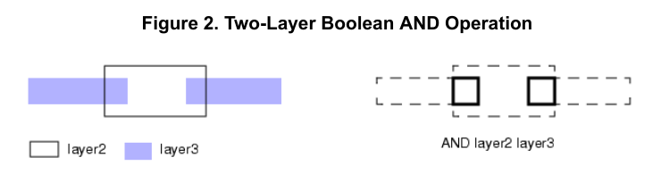
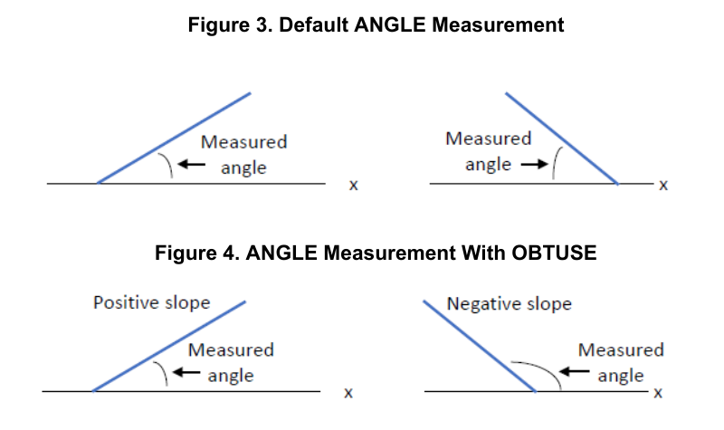
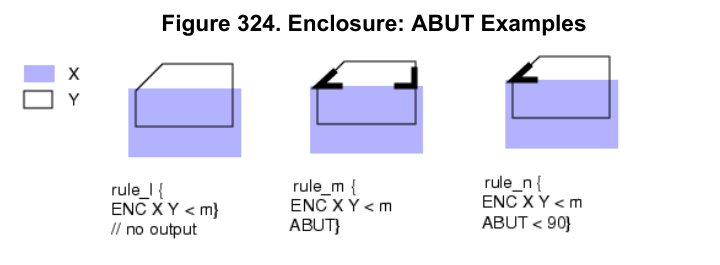
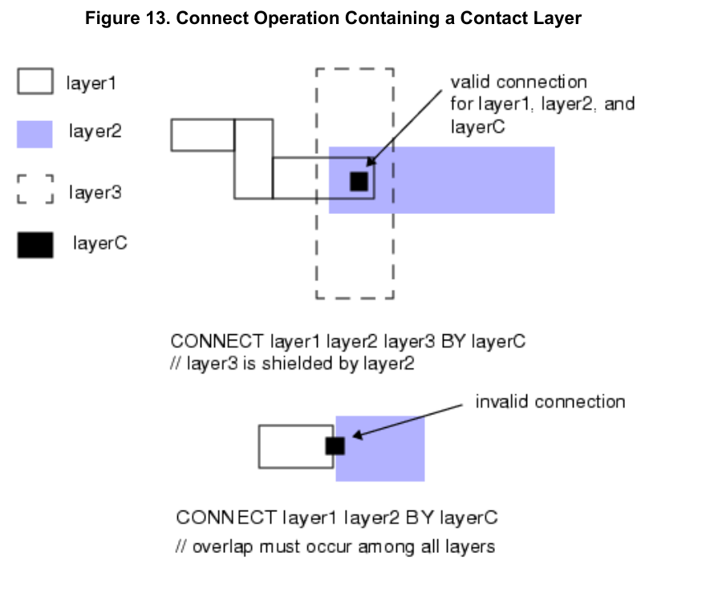
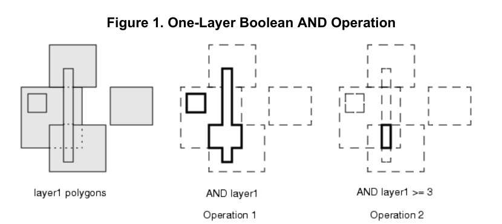
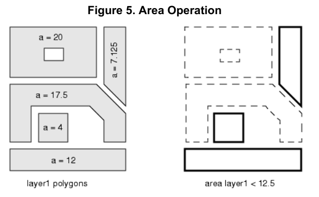
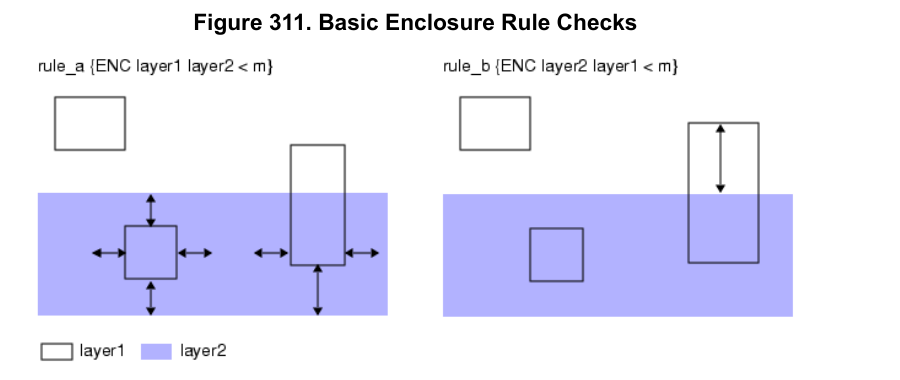
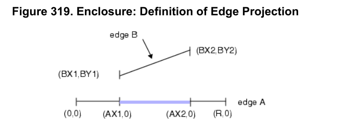
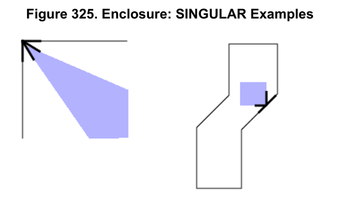
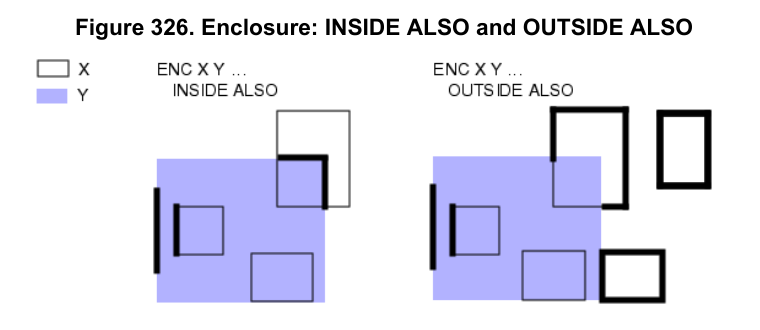

1. 把“小角”看成“大角”
GLM · 图片题 I02图里画了斜线和量角弧线。题目问：加上 OBTUSE 这个选项后，是不是所有斜线都改成量较大的角？
- 模型怎么答
- 是，两个方向的斜线都量较大的角。
- 正确解释
- 不是。图中向右上方倾斜的线仍量较小的角，另一个方向的线才改量较大的角。
- 错在哪里
- 把图中的量角弧线看错了，因此对“是不是全部都取大角”给出了错误结论。
- 补充正文后
- GLM 纠正了这一回答。
测试报告
使用 GPT-5.6-sol 和 GLM-5.3-Flash，测试模型对 2022.2 版与 2025.1 版 svrf_ur.pdf 手册的两项能力：版本差异比较和图片理解。
版本差异比较：把问题和两版完整手册交给模型后，两个模型都能自行搜索、阅读相关页面，并回答版本差异问题。本轮 GPT 得 96 分，GLM 得 87 分（满分均为 100）。具体扣分可在逐题记录中查看。
图片理解：两个模型基本能读懂图意，但仅凭图片时，对细节和规则含义的判断还不够准确。结合相关正文后，回答的准确性和完整性有所提升。
下表为得分：每题 10 分，设 5 个得分项，每项 2 分；每组 10 题，满分均为 100 分。
| 测试条件 | GPT-5.6-sol | GLM-5.3-Flash |
|---|---|---|
| A. 版本差异：完整手册自行检索 | 96 / 100 | 87 / 100 |
| B. 图片理解：只给图片 | 97 / 100 | 90 / 100 |
| C. 图文对照：图片＋正文 | 98 / 100 | 96 / 100 |
对照结果：补充正文后，GPT 提高 1 分，GLM 提高 6 分。只说明这组题的表现改善，不能据此判断所有图片理解问题都能靠补充正文解决。
每项正确完整得 2 分，部分正确或有遗漏得 1 分，错误或关键点缺失得 0 分。同一错误不重复扣分。
| 实验 | 题数 | 提供给模型的材料 | 主要检查什么 |
|---|---|---|---|
| A. 跨版本对比 | 10 题 | 问题＋两版完整 svrf_ur.pdf，可全文搜索、读页和查看页面图片；不给预选摘录和页码。 | 能否自行找到相关资料、比较版本差异并准确回答。 |
| B. 图片理解 | 10 题 | 手册图片，包含图中标题、图例和规则；不提供图旁正文 | 能否读对几何关系、输入层和输出边 |
| C. 图文对照 | 同一组 10 题 | 相同图片，加上对应正文 | 补充正文后，回答是否改善 |
完整手册通过全文搜索和按页读取工具访问，不是一次把七千多页塞进单条提示。每批 5 题共同完成检索；评分仍逐题进行。评分标准与参考材料只在回答完成后用于核分。
版本题展示本次完整手册重跑的回答、检索记录和评分；原先预选原文的回答折叠保留。图片题展示原图、原题、来源和原回答，未重跑。
V01–V10 是版本对比题，I01–I10 是图片题。版本题中的检索记录按每批 5 题保存；“原对照”是提前给出相关原文的旧测试，分数不与新结果混用。
DFM Pattern Analyze 用来分析版图中的图形。本题比较两版说明，检查模型能否把原有用法和新版文档中的扩展分清。
提供 2022.2（3540 页）和 2025.1（3664 页）两版完整 svrf_ur.pdf；模型自行搜索和读页，未提前提供相关页码或摘录。
比较两版DFM Pattern Analyze：原有命令是否被替换？新版的PATTERN_SVRF与DFM Spec SVRF是怎样配合工作的？给出升级后使用这条路径时的注意事项。
原有的普通 `DFM PATTERN ANALYZE` 没有被替换；2025.1仍保留其对指定捕获区域内图形进行对称性分析、输出 pattern/difference 的用法。新版增加的是带 `PATTERN_SVRF` 的LSVRF路径。使用流程是：先用DFM Pattern Analyze分类，生成带Class/Xform属性的代表性标记或代表性包围框；再用`DFM SPEC SVRF`定义每个局部版图clip中执行的平面SVRF操作；最后由`DFM PATTERN ANALYZE PATTERN_SVRF ... FILE spec(...)`按代表pattern启动独立flat Calibre进程，并把结果按guide层的Class/Xform复制回原位置，或无guide时放到顶层规则网格。注意：必须使用`-hier`；svrf_block中的命令须支持flat模式，所需许可证由其中的操作决定；不能用FullScale（`-pto`）；含连接性或DFM Function/Import时需MTflex；不要随意使用依赖方向的操作，因为clip会变换到canonical orientation。
引用：2022.2 PDF p.482/483/484；2025.1 PDF p.552/3455/3456/3462/3463/3469/3471
原有命令未被替换。两版手册中经典的『DFM Pattern Analyze』层操作（License: Calibre Pattern Matching，输出PATTERN_ALL_*/DIFF_ALL_*对称性与差分结果）在2025.1中仍然完整保留（2025.1第549-552页），只是新版在其下新增了『DFM Pattern Analyze With Local SVRF (LSVRF)』机制；2022.2版全文检索不到LSVRF/PATTERN_SVRF，该机制是2022.2→2025.1之间新增的。新版配合方式（2025.1第3462-3474页）：先用模式分类模式的DFM PATTERN ANALYZE对目标层分类，生成带Class ID和Xform属性的代表性层（capture_rep须来自MARKER_REP或BBOX_REP_UNMERGED输出），可选并发生成MARKER_ALL层作guide_layer；再用DFM SPEC SVRF语句定义svrf_block（对每个布局裁剪在独立平面Calibre进程中执行的SVRF命令），最后用DFM PATTERN ANALYZE PATTERN_SVRF ... FILE svrf_spec_name(input:output)调用，把每个独立平面进程的输出写回主层级数据库。注意事项：(1)必须以-hier命令行运行，PATTERN_SVRF要求层级模式；(2)不能用FullScale（-pto），支持-turbo/-hyper；SVRF块中用DFM Function或连通性操作时必须用Calibre MTflex；(3)LSVRF本身不需特别许可，但svrf_block中各操作需各自许可；(4)避免在svrf块中使用方向相关操作（如GROW），因为布局裁剪会被旋转到规范方向，可能导致结果不符预期；(5)指定guide_layer时输出复制到同类ID位置并按Xform变换，未指定时输出放到顶cell规则网格上（间距为最大pattern两倍）；(6)svrf_block中的命令必须支持平面(flat)运行。
引用：2025.1 PDF p.549/552/3455/3456/3462/3463/3469/3470/3471/3472
未确认的内容：无法仅凭两版手册断定LSVRF/PATTERN_SVRF首次发布的具体版本，只能确定2022.2中没有、2025.1中已有。
扣分原因：把旧版文档未检出提升为机制在两版之间新增的结论，并缺少旧版条目页码。
本题未扣分。
旧版事实：2022.2 记载的是原有 DFM PATTERN ANALYZE，对称性输出包括 PATTERN_* 与 DIFF_*，未检出 PATTERN_SVRF 字面；这不能据此证明旧版不支持。
新版事实：2025.1 仍保留 DFM Pattern Analyze，并新增/记载其 LSVRF 调用形式 PATTERN_SVRF。该调用按捕获区域构造唯一版图clip并关联pattern class ID；DFM Spec SVRF提供svrf_block，在独立flat Calibre进程中对每个clip执行，结果写入主层次数据库，并可按匹配class ID写回位置。
变化判断：文档显示为新增LSVRF路径，不是原有命令被替换；旧命令语义未见被删除或改变的证据。
使用建议：升级后使用 PATTERN_SVRF 必须带 -hier。DFM Spec SVRF中各操作仍需相应许可证；LSVRF本身不需专门许可证。使用DFM Function/Connectivity时需MTflex；不能使用 -pto FullScale平台。应分别验证clip、class ID及写回结果。
模型引用：["Calibre SVRF Manual v2022.2, PDF pp.482–483", "Calibre SVRF Manual v2025.1, PDF p.138", "Calibre SVRF Manual v2025.1, PDF p.3456", "Calibre SVRF Manual v2025.1, PDF p.552"]
保留判断：2022.2未检出PATTERN_SVRF仅说明所给资料未出现该字面，不能证明不支持，也不能确定PATTERN_SVRF的首次发布版本。
把文档中的扩展直接写成“新增能力”，没有保留旧版二进制支持及首次发布版本的不确定性。
旧版事实：2022.2手册中DFM Pattern Analyze为普通层操作，许可证Calibre Pattern Matching，输出分Pattern Output与Difference Output两类关键字，未见PATTERN_SVRF字样。
新版事实：2025.1中DFM Pattern Analyze命令本身仍保留（p549-552），未被替换；新增PATTERN_SVRF关键字（p138、p552）：它使DFM Pattern Analyze成为LSVRF调用操作，构建含捕获区内输入层图形的唯一布局剪裁（每个剪裁对应唯一pattern位置及pattern class ID），并将DFM Spec SVRF语句svrf_block中指定的层操作应用于每个剪裁，在独立flat Calibre进程中执行，结果写回主层次数据库，可选按匹配class ID写到布局位置。
变化判断：新增能力（在既有命令上叠加关键字），原命令保留
使用建议：升级后使用该路径注意事项：运行模式必须带-hier；不能使用-pto（FullScale平台）；支持-turbo、-hyper与MTflex；当svrf_block中使用DFM Function Import/DFM Function或连接性语句时必须用MTflex；需持有svrf_block内各操作所需许可证，LSVRF本身不需特殊许可证（p3456）。PATTERN_SVRF详细说明见p3462章节。
模型引用：[{"version": "2022.2", "pdf_pages": [482, 483]}, {"version": "2025.1", "pdf_pages": [138, 552, 3456]}]
保留判断：p3462的详细章节内容未在所给资料中，具体语法细节无法确认。
multigon 是一种可以表示曲线的图形数据；polygon 是由直线边组成的多边形。本题问的是：读入版图时，怎样保留前者，而不转换成后者。
提供 2022.2（3540 页）和 2025.1（3664 页）两版完整 svrf_ur.pdf；模型自行搜索和读页，未提前提供相关页码或摘录。
对比两版手册：想在读入版图时保留指定层的multigon，而不是转为普通polygon，应查什么设置？说明层名、输入/产品与许可证要求，以及两份手册能支持多强的版本结论。
应查`LAYOUT MULTIGON LAYER layer [...]`。layer必须是原始层的名称而不是层号；可列多个名称，含`*`通配符时必须用引号。该设置使指定层在读入OASIS、MEBES或VSB12数据时保留multigon，而不是转换为polygon；手册概述注明支持OASIS输入和extended MEBES job deck。它只用于Calibre nmDRC-H和Calibre FullScale，并要求Calibre Curvilinear Mask Rule Check许可证；产生multigon的操作也要求该许可证。保留结果写入OASIS数据库时仍为multigon，但写入ASCII或GDS结果库会转成未合并polygon。2022.2全文检索未检出该语句，2025.1有明确条目；因此最多能说“2025.1有文档、2022.2未检出”，不能据此断言该功能首次在2025.1发布或2022.2软件一定不支持。
引用：2025.1 PDF p.1461/1462/1438
未确认的内容：2022.2未检出对应条目，不能由此推出软件支持性的绝对结论或首次发布版本。
扣分原因：遗漏LAYOUT SYSTEM必须为OASIS或MFG这一决定语句是否生效的条件。
应查『Layout Multigon Layer』规范语句（用法：LAYOUT MULTIGON LAYER layer [layer...]）。2025.1手册（第1461-1462页）详细记载：它让指定原始层上的multigon（用方程而非分段线段描述的图形）在Calibre读入数据库时保留为multigon而不被转为普通多边形，覆盖默认处理行为。要求：层参数必须是原始层的名字（不能是层号），可含*通配符（需加引号）；LAYOUT SYSTEM须为OASIS或MFG格式（OASIS、MEBES/VSB12版图，且OASIS文件需含curvilinear magic bytes扩展，否则报LML错误）；仅用于Calibre nmDRC-H和Calibre FullScale；需要Calibre Curvilinear Mask Rule Check许可证，产生multigon层的操作同样需要该许可。限制：不能与Layout Path Layer指定同一层；不能与Layout Merge on Input YES、Snap Offgrid YES、Flatten Cell、Push Cell、Layout Window等语句同用；只有表99所列操作（AND、OR、XOR、Copy、DFM Copy、[Not] Area/Donut/Interact等）接受multigon层，其中仅Interact支持约束参数。输出到OASIS结果数据库时保留为multigon，输出到ASCII或GDS数据库时被转为未合并多边形。版本结论强度：2022.2手册全文检索不到Multigon，说明该语句在2022.2文档中不存在，到2025.1已收录；但仅凭两版手册无法断定其首次发布的具体版本。
引用：2025.1 PDF p.1461/1462/1438；2022.2 PDF p.
未确认的内容：2022.2手册中完全检索不到Multigon相关内容，故无法给出其在2022.2中的对应页；首次引入版本介于2022.2之后、2025.1之前，具体无法确定。
扣分原因：由文档未命中推断首次引入的版本区间；输入说明还遗漏extended MEBES job decks限定。
本题未扣分。
旧版事实：2022.2资料未检出“Layout Multigon Layer”；仅凭字面缺失不能判定旧版不支持或该功能在2025.1才首次出现。
新版事实：2025.1应查 LAYOUT MULTIGON LAYER layer [layer…]。layer必须是原始层名而非层号，可多个；含*的通配层名须加引号。用于保留OASIS输入及扩展MEBES job deck中的multigon；描述还列出MEBES/VSB12布局。仅用于Calibre nmDRC-H和Calibre FullScale，并要求Calibre Curvilinear Mask Rule Check许可证。若Layout System未指定OASIS或MFG格式则无效。
变化判断：2025.1出现明确文档说明；相对2022.2的二进制变化及首次版本无法确定。
使用建议：按原始层名配置该statement，必要时用带引号的通配符，并确认输入格式、产品模式和Curvilinear Mask Rule Check许可证；同时检查后续操作及结果数据库是否仍保留multigon。
模型引用：["Calibre SVRF Manual v2025.1, PDF p.1461"]
保留判断：旧版字面扫描为0，不足以证明旧版不支持；资料也不足以证明该statement或相关行为的首次发布版本。
本题未扣分。
旧版事实：所给2022.2资料页未出现Layout Multigon Layer；对全文档的字面扫描'Layout Multigon Layer'为0次。按字面未检出不证明不支持的规则，不能据此断定2022.2不支持该语句。
新版事实：2025.1手册明确记载LAYOUT MULTIGON LAYER layer [layer…]：为指定原始层保留multigon（由方程而非分段线性描述的图形），读入时不转为普通polygon。层名须为名称而非编号，可用带引号的*通配符；需Layout System指定OASIS或MFG格式，否则无效；支持OASIS、MEBES、VSB12输入；仅用于Calibre nmDRC-H与Calibre FullScale；要求Calibre Curvilinear Mask Rule Check许可证；只有Table 99列出的操作（AND、Copy、OR/XOR、Interact等）接受multigon-preserving层，且除Interact外不支持constraint参数。
变化判断：仅新版文档可见；版本结论强度受限
使用建议：查'Layout Multigon Layer'设置即可。两份手册能支持的结论是：2025.1明确支持该语句；2022.2只能说不确定，不能下'不支持'或'2025.1首次引入'的结论。
模型引用：[{"version": "2025.1", "pdf_pages": [1461]}]
保留判断：2022.2是否支持该语句无法由所给资料判定。
ENC 用于检查图形的包围关系或包围距离。工程师发现两层图形恰好接触、距离为零时没有检查结果，怀疑是软件升级改变了行为。
提供 2022.2（3540 页）和 2025.1（3664 页）两版完整 svrf_ur.pdf；模型自行搜索和读页，未提前提供相关页码或摘录。
工程师认为ENC via metal >=0 <=0.04在升级后才不返回零距离接触/重合。请对比两版说明，判断是否发生变化，并说明距离约束和补抓零距离应怎样处理。
没有证据表明升级改变了这一点；两版Enclosure说明相同：`>=0 <=0.04`这类区间约束不会返回接触/重合的`=0`情况。原因是Enclosure默认不测相交边对；距离约束主要用于实际间距，且`>=0`并不等价于自动捕获touching/coincident。应把零距离作为交互情形另行补抓：使用`ABUT`检查相交/相接边，若要限定角度可用例如`ABUT < 90`；若只要零角度重合/inside coincidence，可用`ABUT == 0`（手册说明包含0的ABUT范围也会输出coincident-inside，且该事件无距离测量）；点到边或点到点奇异交互用`SINGULAR`，穿越重叠情形再考虑`OVERLAP`。如只想输出这些交互结果，可加`INTERSECTING ONLY`，但它必须跟在至少一个交互过滤器后。
引用：2022.2 PDF p.1056/1067/1068/1069；2025.1 PDF p.1186/1189/1199/1200/1201
扣分原因：遗漏Enclosure距离约束必须有上界的要求。
没有发生变化。2022.2（第1056页）和2025.1（第1189页）在Enclosure操作的constraint说明中都有完全相同的注意事项：写成区间约束形式的『大于等于零』条件（如>=0 <=0.04）的Enclosure操作，不会返回接触/重合（=0距离）的情况。因此工程师认为『升级后才不报零距离接触/重合』是错误的——两版行为一致，这不是升级引起的改变，而是区间约束本身的固有行为。正确处理方法：(1)距离约束仍可写ENC via metal >=0 <=0.04用于检查0到0.04之间的间隙，但零距离情形不会命中；(2)要补抓零距离接触/重合，应使用ABUT和SINGULAR次级关键字来检查=0条件，例如 ENC via metal < 0.04 ABUT == 0 OVERLAP SINGULAR 之类的组合（手册示例给出用ABUT == 0 OVERLAP SINGULAR捕捉重合边、交叉边和单点接触）；(3)手册还提示区间约束有时会产生意外结果，详见Calibre Verification User's Manual的『Interval Constraints for Output Suppression』一节。
引用：2022.2 PDF p.1056；2025.1 PDF p.1189
未确认的内容：无重大不确定；两版该注意事项文字一致。具体rule写法可再参考两版Enclosure示例页，但核心结论（需ABUT/SINGULAR补抓=0）已由正文明确。
扣分原因：遗漏距离约束必须有上界；对具体关键字组合的手册示例归因未得到所列引文支持。
本题未扣分。
旧版事实：2022.2明确说明：区间约束中的 >=0（例如 >=0 <=4）不返回接触/重合的 =0 条件；constraint须为非负、具有上界，并按用户单位解释。
新版事实：2025.1保留相同说明，并额外提示区间约束有时可能产生非预期结果。因而 ENC via metal >=0 <=0.04 不应被解释为同时可靠捕获零距离和0.04以内的所有情况；零距离仍被排除。
变化判断：文档语义未见变化；新版只是增加了对区间约束潜在非预期结果的提示。
使用建议：把 >=0 <=0.04 用作有上界的距离区间检查时，不要依赖它补抓接触/重合。对 =0 条件另用ENC的ABUT和/或SINGULAR次关键字检查，并分别验证正距离区间结果。
模型引用：["Calibre SVRF Manual v2022.2, PDF p.1056", "Calibre SVRF Manual v2025.1, PDF p.1189"]
保留判断：结论依据两版手册说明，未据此推断未给出的二进制实现细节；未见足以证明升级导致零距离行为变化的证据。
本题未扣分。
旧版事实：2022.2（p1056）Enclosure的constraint注明：标准约束除>a、>=a、!=a外可用；必须有上界，须为非负实数，按user units解释。明确注释：区间约束中写>=0（如>=0 <=4）不返回接触/重合（=0）条件，应用ABUT和SINGULAR次级关键字检查=0。
新版事实：2025.1（p1189）对constraint的说明与注释与2022.2实质相同：>=0在区间约束内同样不返回=0条件，仍指向ABUT和SINGULAR；仅新增一句提示：区间约束有时会有意外结果，参见Verification User's Manual的'Interval Constraints for Output Suppression'。
变化判断：无实质行为变化，仅文档补充提示
使用建议：工程师的说法不成立：两版手册均说明>=0 <=0.04这类区间约束本来就不返回零距离接触/重合，并非升级后改变。距离约束须含上界、非负实数、user units；要补抓零距离（=0）情形，应另用ABUT和SINGULAR关键字，不能依赖ENC >=0 <=0.04。
模型引用：[{"version": "2022.2", "pdf_pages": [1056]}, {"version": "2025.1", "pdf_pages": [1189]}]
保留判断：二进制实际行为未实测，仅依据两版手册文字一致判断。
同一个 DFM Pattern Analyze 命令可以输出不同类型的分析结果。本题比较两版手册列出的输出选项。
提供 2022.2（3540 页）和 2025.1（3664 页）两版完整 svrf_ur.pdf；模型自行搜索和读页，未提前提供相关页码或摘录。
比较两版DFM Pattern Analyze的输出选项：能否说参数完全没变？新版新增记录了哪类输出，MARKER_CENTER或MASK_CENTER有什么用？原有pattern/difference输出是否因此消失？
不能说参数完全没变。2022.2列出的输出是`PATTERN_ALL*`和`DIFF_ALL*`两类；2025.1保留了这些原有pattern/difference输出，同时新增Marker Output：`MARKER_ALL`、按对称条件筛选的`MARKER_ALL_180/90/X/Y`、`MARKER_AXIS_X/Y`、`MARKER_CENTER`以及`MASK_CENTER`。因此原有pattern/difference并未消失。`MARKER_CENTER`在每个pattern的可能对称中心放置小标记；`MASK_CENTER`生成以该可能中心为中心、包住整个pattern的未合并矩形polygon。后者可作为下一次DFM Pattern Analyze的`MASK`捕获层，使捕获区域中心更接近真实对称中心，避免原marker偏心导致本应对称的图形被判为不对称。
引用：2022.2 PDF p.482/483/484/485；2025.1 PDF p.549/550/551/552/554/555
不能说参数完全没变。对比2022.2（第482-484页，仅Pattern Output表4-21与Difference Output表4-22）与2025.1（第549-552页）可见：原有的pattern输出（PATTERN_ALL、PATTERN_ALL_180/90/X/Y）和difference输出（DIFF_ALL_180/90/X/Y）全部保留（新版表56、57），并未因新增输出而消失；新版新增了第三类输出——Marker Output（表58），包括MARKER_ALL、MARKER_ALL_180/90/X/Y、MARKER_AXIS_X/Y、MARKER_CENTER、MASK_CENTER。其中MARKER_CENTER输出每个pattern的可能对称中心处的小标记；MASK_CENTER输出未合并的矩形层，这些矩形包围整个pattern并以其可能对称中心为中心，可把它作为下一次DFM Pattern Analyze的capture_layer使用，使捕获区域中心更接近pattern真实的对称中心，从而得到更有意义的对称分析结果（另有Example 3演示）。用法上，这些关键字仍是DFM PATTERN ANALYZE的symmetry_output参数，LICENSE仍为Calibre Pattern Matching。此外新版描述补充说明：该操作用capture_layer形状中心作为对称分析中心，若这不是pattern真实对称中心则结果无意义。
引用：2022.2 PDF p.482/483/484；2025.1 PDF p.549/550/551/552/555
未确认的内容：无；新增Marker Output及原有关键字保留均有两版正文对照。
本题未扣分。
旧版事实：2022.2的DFM Pattern Analyze输出选项包括PATTERN_ALL及各PATTERN_*、DIFF_*；输出重点是模式、多边形或差异层。
新版事实：2025.1保留原有pattern和difference选项，并扩展MARKER_ALL、MARKER_ALL_180/90/X/Y、MARKER_AXIS_X/Y、MARKER_CENTER及MASK_CENTER等marker输出。因此不能说参数完全没变，但也不能说原有输出消失。MARKER_CENTER输出每个pattern的可能对称中心小marker；MASK_CENTER输出以该中心为中心、包围整个pattern的未合并矩形，可作为另一次Pattern Analyze的capture_layer，以改善中心定位。
变化判断：输出选项的文档化扩展；原有pattern/difference输出仍在，未见其语义被替换的证据。
使用建议：原有PATTERN_*或DIFF_*规则可继续核对使用；新增中心输出时，确认capture_layer中心本身接近实际对称中心，否则分析可能无意义。MASK_CENTER适合生成后再作为下一次分析的capture_layer。
模型引用：["Calibre SVRF Manual v2022.2, PDF pp.482–483", "Calibre SVRF Manual v2025.1, PDF pp.549–551", "Calibre SVRF Manual v2025.1, PDF p.552"]
保留判断：手册支持“新增可用输出选项”的结论；未据此断言旧选项的所有底层实现或输出数据库细节完全不变。
迁移建议直接保证原有规则行为不受影响，并把 marker 输出概括为合并层；MASK_CENTER 明确是未合并矩形，建议需保留条件。
旧版事实：2022.2（p482-483）DFM Pattern Analyze的symmetry_output仅有两组关键字：Pattern Output（PATTERN_ALL/180/90/X/Y）与Difference Output（DIFF_ALL_180/90/X/Y），无任何Marker输出。
新版事实：2025.1（p549-552）不能说参数完全没变：新增第三类Marker Output，包括MARKER_ALL（附Class、Xform属性）、MARKER_ALL_180/90/X/Y（在各捕获区中心输出小marker）、MARKER_AXIS_X/Y（4 dbu宽的轴线）、MARKER_CENTER（每个pattern的可能对称中心的小marker）与MASK_CENTER（未合并的矩形层，包围整个pattern且中心在可能对称中心）。MASK_CENTER可用作另一次DFM Pattern Analyze的capture_layer，使捕获区中心更接近真实对称中心，从而获得更有意义的对称分析（p550）。原Pattern/Difference输出仍完整保留于Table 56、57。
变化判断：新增输出选项，原有输出不变
使用建议：升级后原有PATTERN_*/DIFF_*规则文件行为不受影响；需要标记或估计对称中心时选用MARKER_CENTER/MASK_CENTER，并注意marker输出默认仍为合并多边形层，捕获区重叠时图形会合并（p552）。
模型引用：[{"version": "2022.2", "pdf_pages": [482, 483]}, {"version": "2025.1", "pdf_pages": [549, 550, 551, 552]}]
保留判断：仅marker输出之外是否还有其他细微参数差异未逐项核对所给页之外内容。
DFM Teardrop Analyze 是用于分析特定图形的命令。本题让模型比较两版说明，不能只因旧版没查到同名条目，就断定功能是新版首次加入的。
提供 2022.2（3540 页）和 2025.1（3664 页）两版完整 svrf_ur.pdf；模型自行搜索和读页，未提前提供相关页码或摘录。
比较两版手册对DFM Teardrop Analyze的说明。新版用什么形状近似输入，输出哪些关键属性，默认输出与CENTER有什么区别，需要什么许可证？能否据此确定首次发布版本？
2025.1的DFM Teardrop Analyze把每个输入polygon近似为理想teardrop：圆与圆外一点（tip）的凸包；也处理截断、double和满足条件的triple teardrop。它计算并附加`OUTRADIUS`、`INRADIUS`、`AXIS_LENGTH`、`MAX_STRUT_LENGTH`和`IS_TANGENT`属性。默认不指定输出关键字时，输出层是输入层的copy；`CENTER`则输出连接T-out tip与中心的轴线段，宽度为2 user units，且输出未合并。另有`RING`，输出T-out与T-in圆形部分之间的环状近似区域。该操作要求Calibre nmDRC-H许可证；不满足近似条件的形状会被拒绝并按最小包围圆处理。2022.2全文检索未找到该条目，但“2025.1有、2022.2未检出”不能证明首次发布版本。
引用：2025.1 PDF p.977/978/979/980/981；2022.2 PDF p.7/8
未确认的内容：2022.2未检出DFM Teardrop Analyze条目，不能据此确定首次发布版本。
扣分原因：旧版pp7–8的引用不能支持所声称的全册检索未命中结论。
DFM Teardrop Analyze在2022.2手册中检索不到（对TEARDROP的正则检索为0命中），在2025.1手册第977-982页有完整说明。新版功能：把输入层每个多边形近似为理想泪滴形——即圆与其圆外一点（尖端）的凸包，并处理截断泪滴、双泪滴和三泪滴（三泪滴要求恰好6个顶点、边长1%容差内相等、尖端对称）；近似使用T-out（最小外包理想泪滴）和T-in（同中心同尖端且含于多边形内的最大理想泪滴）。许可证：Calibre nmDRC-H。输出的关键DFM属性：OUTRADIUS（T-out半径，拒绝形状取最小外包圆半径）、INRADIUS（T-in半径，特定情形为零）、AXIS_LENGTH（轴段长，双泪滴取平均，截断泪滴按未截断测量）、MAX_STRUT_LENGTH（最大撑段长）、IS_TANGENT（所有撑段与圆部分相切为1否则0）。默认输出是输入层的副本；CENTER关键字改为输出从T-out尖端连到中心的轴段（宽2用户单位，未合并）；RING关键字输出T-out与T-in圆部之间环状区域的多边形近似（未合并，最多2048顶点）。对无法近似的拒绝形状，RING输出最小外包圆，CENTER输出2×2方形标记。版本结论：只能确定该操作在2022.2手册中不存在、2025.1中已有；仅凭这两份手册不能断定其首次发布版本。
引用：2025.1 PDF p.977/978/979/980/981/982；2022.2 PDF p.
未确认的内容：首次发布版本无法由两版文档确定；2022.2中无任何Teardrop相关内容可引用。
本题未扣分。
旧版事实：所给2022.2资料未检出DFM Teardrop Analyze；这不能证明旧版不支持，也不能据此判定首次发布版本。
新版事实：2025.1将每个输入polygon近似为理想teardrop，即圆与圆外tip的凸包，并计算OUTRADIUS、INRADIUS、AXIS_LENGTH、MAX_STRUT_LENGTH及IS_TANGENT属性。默认输出是输入层副本并附加属性；CENTER输出表示T-out tip到中心的axis segment的未合并polygon，宽2个用户单位。操作要求Calibre nmDRC-H许可证。
变化判断：2025.1有明确文档说明；相对2022.2的功能增删及首次发布版本均无法确定。
使用建议：需要保留原形状并读取属性时使用默认输出；需要轴线几何时使用CENTER，并按未合并、2用户单位宽度处理。验证输入为polygon及被拒绝形状的属性结果，不能把CENTER当作原polygon副本。
模型引用：["Calibre SVRF Manual v2025.1, PDF p.977", "Calibre SVRF Manual v2025.1, PDF p.979"]
保留判断：2022.2未检出该字面不构成不支持证明；仅凭两版所给摘录不能确定该操作的首次发布版本或二进制行为差异。
本题未扣分。
旧版事实：所给2022.2资料未出现DFM Teardrop Analyze，全文档字面扫描为0次；依规则，字面未检出不能证明不支持，也不能反推2025.1为首次发布版本。
新版事实：2025.1（p977、979）DFM Teardrop Analyze：许可证为Calibre nmDRC-H。将每个输入多边形近似为理想泪滴形（圆与其外一点tip的凸包），并支持截断、双、三泪滴。输出属性：OUTRADIUS（T-out半径，拒绝形状取最小外包圆半径）、INRADIUS（T-in半径，被孔接触轴线段或拒绝形状时为0）、AXIS_LENGTH（轴线段长度）、MAX_STRUT_LENGTH，以及IS_TANGENT（strut是否与圆部分相切）。默认输出为输入层副本；CENTER输出宽2 user units的轴线段（未合并）；RING输出T-out与T-in圆部分之间的环状区域近似（孔接触/跨越轴线段时输出T-out，未合并）。
变化判断：仅新版文档记载，首次发布版本无法确定
使用建议：升级后使用时需确认持有Calibre nmDRC-H许可证；按需选择默认/CENTER/RING输出；无法用本资料断定该命令首发于2025.1，如需确定首次版本须查更早版本手册。
模型引用：[{"version": "2025.1", "pdf_pages": [977, 979]}]
保留判断：2022.2是否存在该命令未知；p978、980-981的图与拒绝形状说明未在所给资料中。
PATTERN_SVRF / LSVRF 是针对局部版图片段执行 SVRF 操作的一条路径。本题关注能不能运行、怎样配置，不是让模型生成版图规则。
提供 2022.2（3540 页）和 2025.1（3664 页）两版完整 svrf_ur.pdf；模型自行搜索和读页，未提前提供相关页码或摘录。
升级后使用PATTERN_SVRF/LSVRF时，是否必须多线程、是否一定要MTflex、能否用FullScale -pto，以及是否另需LSVRF专用许可证？结合旧版手册能查到什么，给出准确的运行建议。
2025.1的PATTERN_SVRF要求主运行使用-hier；LSVRF可单线程（不带-turbo），也可多线程（带-turbo），并支持-hyper，因此不必一律多线程或使用MTflex。仅当DFM Spec SVRF的SVRF块使用DFM Function Import、DFM Function，或连接性语句、操作时，才要求MTflex。不能使用FullScale的-pto；仍须具备块内操作所需许可证，但LSVRF本身没有专用许可证。运行前据此检查SVRF块并选模式。2022.2手册可查到DFM Pattern Analyze的对称性分析用法及其Calibre Pattern Matching许可证说明；全文未检出PATTERN_SVRF/LSVRF，不能据此推断软件支持情况或首次发布版本。
引用：2025.1 PDF p.3455/3456/3469；2022.2 PDF p.482
2025.1手册"Local SVRF Requirements"（p.3456）明确规定：①PATTERN_SVRF必须以-hier命令行参数运行；②LSVRF既支持单线程（不加-turbo）也支持多线程（加-turbo），-hyper也被支持——因此并非必须多线程；③MTflex运行模式被支持，但只在两种情况下才强制要求：SVRF块中使用了DFM Function Import或DFM Function语句，或使用了connectivity语句/操作——即并非一定要MTflex；④Calibre运行不能使用FullScale平台（-pto命令行参数被禁止）；⑤许可证方面，LSVRF本身不需要专用许可证，只需DFM Spec SVRF语句中各操作所需的常规许可证。旧版2022.2手册检索不到LSVRF、Local SVRF或PATTERN_SVRF任何内容，说明该功能在2022.2中尚不存在，属于后续版本新增，无法从2022.2文档佐证这些要求。运行建议：用-hier跑PATTERN_SVRF；普通SVRF块可单线程或多线程，仅当用到DFM Function或连接性语句时才加MTflex；不要与-pto（FullScale）同用；无需额外购买LSVRF许可，但确认块内操作（如相关DFM许可）已具备。
引用：2025.1 PDF p.3455/3456
未确认的内容：2022.2版中确实查不到该功能，故无法对比其早期行为；其首次引入的具体版本号无法由两版手册断定。
扣分原因：把2022.2手册未检出LSVRF/PATTERN_SVRF误当成该版本软件中功能不存在的证明。
本题未扣分。
旧版事实：给定的2022.2资料中未检出PATTERN_SVRF/LSVRF字面，未提供其支持性、线程要求或许可证结论；字面未检出不能证明旧版不支持，也不能据此判断首次发布版本。
新版事实：2025.1文档规定：PATTERN_SVRF运行必须使用-hier；LSVRF支持单线程（不加-turbo）和多线程（加-turbo），-hyper也支持。MTflex仅在DFM Spec SVRF中使用DFM Function Import/DFM Function，或使用Connectivity语句/操作时必需。禁止使用FullScale平台（-pto）。LSVRF本身不需专用许可证，但其中操作所需许可证仍必须具备。
变化判断：新版明确记录了LSVRF运行约束；相对旧版不能仅凭字面扫描认定新增或行为变化。
使用建议：可按规则选择单线程或-turbo；仅在上述Function或Connectivity条件出现时启用MTflex。PATTERN_SVRF加-hier，禁止-pto。按DFM Spec SVRF内实际操作检查普通Calibre许可证。以上是手册规定，未提供二进制实测证据。
模型引用：[{"version": "2025.1", "pdf_page": 138, "detail": "LSVRF及PATTERN_SVRF定义"}, {"version": "2025.1", "pdf_page": 3456, "detail": "线程、MTflex、-pto、-hier及许可证要求"}, {"version": "2022.2", "pdf_page": null, "detail": "给定资料未提供对应页；literal_scan为0"}]
保留判断：旧版实际是否支持及其首次发布版本无法由给定资料确定；未进行二进制运行验证。
本题未扣分。
旧版事实：2022.2手册字面扫描中LSVRF与PATTERN_SVRF出现0次，手册未记载这两项；按规则，字面未检出不证明功能在2022.2中不存在，也不证明其为2025.1首次发布，故旧版行为无法由给定资料确认。
新版事实：2025.1明确：LSVRF支持单线程（无-turbo）和多线程（-turbo）运行，且支持-hyper；使用DFM Pattern Analyze配合PATTERN_SVRF关键字时必须加-hier。MTflex运行模式被支持，但仅在两种情况下必需：svrf_block中使用DFM Function Import或DFM Function；或svrf_block中使用连接性（connectivity）语句/操作。运行不能用FullScale平台（禁用-pto命令行参数）。许可证方面：只需DFM Spec SVRF中所写操作各自要求的许可证，LSVRF本身不需要专用许可证。
变化判断：文档新增/可确认的运行要求（2025.1有明文，2022.2资料未覆盖）
使用建议：不必强制多线程，单线程即可；仅当svrf块用到DFM Function或连接性语句时才需MTflex并按需开启；PATTERN_SVRF调用务必带-hier；不要加-pto；无需为LSVRF本身申请额外license，但块内每个操作（如pxOPC等RET操作）的license要备齐。
模型引用：[{"version": "2025.1", "pdf_page": 138}, {"version": "2025.1", "pdf_page": 3456}]
保留判断：2022.2中LSVRF/PATTERN_SVRF是否存在及当时要求，给定资料无法判断；-hier等要求是否为新版新增亦无法确认。
保留为 multigon 的曲线图形，可能与普通 polygon 有不同的操作限制。本题要求模型按具体操作逐项核对。
提供 2022.2（3540 页）和 2025.1（3664 页）两版完整 svrf_ur.pdf；模型自行搜索和读页，未提前提供相关页码或摘录。
新版保留multigon的层能否像普通polygon层一样随意做任何操作、随意加constraint？请结合两版手册，说明AND/OR等操作、Interact和Not Interact的区别，以及升级时如何检查现有规则。
不能。2025.1的LAYOUT MULTIGON LAYER使指定原始层保留multigon；仅表列操作接受这种层并保留multigon，包括AND、单/双层OR、NOT、XOR、Copy、DFM Copy、[Not] Area、[Not] Donut和[Not] Interact。含multigon的输入中，只有Interact支持constraint；Not Interact虽可无constraint使用，却不能加constraint，其他表列操作也不能加。普通polygon在保留层上仍按通常方式处理；不支持multigon的操作会报KND1。升级时逐条核对该层及派生层流经的操作和constraint，尤其不要仅凭普通Interact/Not Interact语法判断可用；编译并核查输出。2022.2已有Interact/Not Interact的普通语法及constraint说明，但全文未检出LAYOUT MULTIGON LAYER，不能将普通层规则套用于新版保留层。
引用：2025.1 PDF p.1461/1462/1351/2069；2022.2 PDF p.1216/1964
扣分原因：升级检查建议遗漏保留multigon所需许可证及适用输入格式、运行产品条件。
不能随意操作或随意加constraint。2025.1手册Layout Multigon Layer（p.1461）给出Table 99"Multigon-Preserving Operations"，multigon层只能作为下列操作的输入：AND、[Not] Area、Copy、[Not] Donut、[Not] Interact、OR（单层和双层）、XOR（单层和双层）、DFM Copy。输入到其他不支持的层操作（如SIZE、OUTSIDE等）会报编译错KND1（incorrect input layer kind, must be a DEFAULT layer）。关于constraint，手册明确注明：Interact是唯一在输入含multigon时支持constraint参数的操作，其余所有操作（包括Not Interact）都不支持constraint——因此Not Interact不能带constraint。Interact选出与第二层共享面积/边/边段的polygon，Not Interact是其补集（选出无任何共享的polygon，并有SINGULAR ALSO/ONLY选项，此二选项不能与BY NET同用）。升级检查建议：逐条检查作用于multigon层的语句是否都在Table 99清单内；确认除Interact外没有任何语句带constraint；注意输出到ASCII/GDS结果库时multigon会被转成unmerged polygon，只有OASIS输出才保留；并检查没有与Layout Path Layer同层、Layout Merge on Input YES、Flatten Cell、Snap Offgrid YES等被禁止的语句组合。2022.2手册检索不到multigon相关内容，说明该语句是2022.2之后新增，旧规则文件原本不含此类层，升级时主要防范新写规则越界。
引用：2025.1 PDF p.1461/1462/2069
未确认的内容：Table 99之外的具体操作清单以2025.1手册原文为准；首次引入版本无法由两版断定。
扣分原因：把旧版未检出推成新增时间及旧脚本内容的确定结论；操作清单遗漏NOT，升级建议还遗漏许可证与适用输入、运行条件。
本题未扣分。
旧版事实：给定的2022.2资料未检出“Layout Multigon Layer”，因此无法据此断言旧版不支持、支持范围或约束规则。
新版事实：2025.1仅明确接受特定操作：AND、[Not] Area、Copy、[Not] Donut、[Not] Interact、NOT、OR及XOR；这些操作可保留输入multigon并使输出继续具备multigon-preserving属性。含multigon输入时，Interact是唯一支持constraint的操作；包括Not Interact在内的其他操作均不支持constraint。普通polygon仍按通常方式处理。该功能限nmDRC-H和FullScale，并需相应许可证。
变化判断：新版给出明确的操作白名单和constraint限制；旧版是否没有该能力不能由字面未检出推出。
使用建议：升级时逐条检查multigon输入涉及的操作，只使用文档列出的操作；Interact可保留并核对constraint，Not Interact及其他操作应移除multigon场景下的constraint。不能把multigon层当作普通polygon层任意操作。给定摘录没有定义Interact与Not Interact更完整的几何语义，勿据此扩展推断。
模型引用：[{"version": "2025.1", "pdf_page": 1461, "detail": "Layout Multigon Layer、支持操作及constraint限制"}, {"version": "2022.2", "pdf_page": null, "detail": "给定资料未提供对应页；literal_scan为0"}]
保留判断：上述是2025.1手册说明；未提供实际二进制对未列操作或边界规则的验证结果。
本题未扣分。
旧版事实：2022.2手册字面扫描"Layout Multigon Layer"为0次，手册未记载该语句；不能据此断定旧版不支持，只能说明旧版资料未提供对应说明。
新版事实：2025.1明确不能随意操作：该语句用于OASIS/MEBES/VSB12输入（需Layout System指定OASIS或MFG格式），仅用于nmDRC-H和Calibre FullScale，且需Calibre Curvilinear Mask Rule Check许可证。只有表99所列操作接受multigon-preserving层作输入：AND、OR（一/二层）、XOR、NOT、Copy、[Not] Area、[Not] Donut、[Not] Interact。约束方面：Interact是唯一支持constraint参数的操作，包括Not Interact在内的其他操作在multigon存在时均不支持constraint。
变化判断：新版明文限制（旧版资料缺失，无法比较）
使用建议：升级后不要假设multigon层等同普通polygon层。检查现有规则：凡作用于LAYOUT MULTIGON LAYER指定层的操作，须核对是否在表99白名单内；带constraint的Interact可用，Not Interact及其他操作需去掉constraint或先转为普通层。确认运行模式为nmDRC-H/FullScale、输入为OASIS/MEBES并备好Curvilinear MRC license。
模型引用：[{"version": "2025.1", "pdf_page": 1461}]
保留判断：2022.2是否已有等效机制无从考证；旧版行为不得下结论。
AND 可以取两个图层的重叠部分。node 指结果关联的电气连接信息。本题检查模型是否只看图形相同，就误认为连接属性也完全相同。
提供 2022.2（3540 页）和 2025.1（3664 页）两版完整 svrf_ur.pdf；模型自行搜索和读页，未提前提供相关页码或摘录。
对比2022.2和2025.1：把gate = poly AND diff改成gate = diff AND poly，几何和node继承是否都不变？说明真正的例外，并判断这是不是新版规则变化。
两版结论相同：双层AND的几何交集满足交换律，交换poly和diff后几何不变；但连接提取时AND是node-preserving，通常从第一输入层传递连接性。因此gate = poly AND diff通常继承poly的node，改为gate = diff AND poly则继承diff，可能错误。真正需要注意的例外是：若输出gate出现在CONNECT或SCONNECT语句中且不是BY层，AND不传递连接性，此时不能再称它继承任一输入的node。LVSCAREFUL相关层次放置也在两版中强调输入顺序。这不是2025.1新增的规则变化；升级时应检查输入顺序、gate的连接语句角色及依赖连接性的器件规则。
引用：2022.2 PDF p.169/170/171；2025.1 PDF p.179/180
几何结果不变，但node（连接性）继承会变——两者并非都不变。两版手册在AND操作描述中说法一致：Boolean AND满足交换律，交换操作数不改变几何输出；但AND是node-preserving操作，输出层继承第一个输入层的连接性。因此gate = poly AND diff时gate继承poly的连接性；改成gate = diff AND poly后gate会继承diff的连接性，手册称这"usually an error"（通常是个错误），尽管几何完全相同。真正的例外：如果输出层出现在Connect或Sconnect语句中（但不作为BY层），则连接性不再由AND操作传递，此时交换操作数才真正无影响。这是否新版规则变化？对比两版原文（2022.2 p.170-171与2025.1 p.180），措辞与结论完全相同，均有"geometrically identical""inherits the connectivity of diff, which is usually an error"及Connect/Sconnect例外，因此这不是2025.1的新规则变化，而是两版一贯的既有行为。升级建议：保持gate = poly AND diff的写法，或需要继承diff连接性时应有意交换并用注释说明；若输出层已由Connect/Sconnect定义连接，则顺序无关。
引用：2022.2 PDF p.170/171；2025.1 PDF p.180
未确认的内容：无重大不确定点；手册仅说继承第一个输入层的连接性，未涉及其他隐藏差异。
扣分原因：把“不由AND传递连接性”的例外扩大成交换输入顺序在所有方面都无影响，引文不支持这一扩大结论。
本题未扣分。
旧版事实：2022.2明确说明两层AND具有交换几何结果：poly AND diff与diff AND poly几何相同；但AND保留第一输入层的connectivity。因此gate = poly AND diff继承poly节点，交换后继承diff节点，通常不同。旧版示例已将后者标为错误。
新版事实：2025.1保留相同规则：两层AND几何上可交换，connectivity从第一输入层传递。因此交换输入不会改变几何，却会改变通常的node继承。新版另明确：若输出层出现在Connect或Sconnect语句中（但不是BY层），AND操作不传递connectivity。
变化判断：几何规则没有变化，输入顺序对node继承的规则也没有变化。Connect/Sconnect场景下“不传node”的说明只在给定新版摘录中出现，属于文档新增或澄清；不能据此证明二进制行为才发生变化。
使用建议：保留gate = poly AND diff的输入顺序以继承poly节点；不要因几何等价而交换输入。升级审查时特别检查输出层是否用于Connect/Sconnect，以及是否为BY层；该场景按新版说明不能依赖AND传递connectivity。
模型引用：[{"version": "2022.2", "pdf_page": 169, "detail": "两层AND node-preserving且从第一输入层传递"}, {"version": "2022.2", "pdf_page": 170, "detail": "几何交换性及poly/diff示例"}, {"version": "2025.1", "pdf_page": 179, "detail": "第一输入层node继承"}, {"version": "2025.1", "pdf_page": 180, "detail": "交换几何等价、Connect/Sconnect例外"}]
保留判断：Connect/Sconnect例外在所给2022.2摘录中未出现；其是否为旧版已存在但未在摘录中说明，无法确定。
把相同输入按 COPY 处理列为 node 继承的第二个例外；这不等于停止继承。
旧版事实：2022.2：两层AND几何输出可交换（Boolean AND满足交换律），AND layer3 layer2与layer2 layer3几何结果相同；但AND是node-preserving操作，连接性从第一个输入层传递。故gate = poly AND diff使gate继承poly的连接性，写成gate = diff AND poly会被标注为bad——几何相同但节点继承改变，属常见错误。
新版事实：2025.1保持相同规则：几何交换律不变，连接性仍从第一输入层继承，示例文字与旧版一致。真正例外有二：(1)若输出层出现在Connect或Sconnect语句中（但不是作为BY层），AND操作不传递连接性；(2)两层输入完全相同时按COPY layer1处理并显示于transcript（此点为2025.1新增文字，2022.2给定页未载）。另2025.1将LVSCAREFUL相关表述中的"LVS runs"改为"circuit extraction"。
变化判断：无变化（核心语义两版一致；2025.1补充说明例外情形）
使用建议：交换AND操作数不是新版规则变化，但会改变节点继承：升级前后都应审查规则文件中两层AND的操作数顺序，确认派生层（如gate）继承的连接性来源正确；若派生层用于Connect/Sconnect（非BY层），连接性本就不由AND传递。逐一grep规则文件中两层AND写法即可。
模型引用：[{"version": "2022.2", "pdf_page": 169}, {"version": "2022.2", "pdf_page": 170}, {"version": "2025.1", "pdf_page": 179}, {"version": "2025.1", "pdf_page": 180}]
保留判断：2025.1新增的COPY layer1说明是否伴随二进制行为变化，资料未说明，无法判定。
ANGLE 用于按角度选择边，OBTUSE 是其中一个选项。本题同时比较版本说明和不同方向边的量角方式。
提供 2022.2（3540 页）和 2025.1（3664 页）两版完整 svrf_ur.pdf；模型自行搜索和读页，未提前提供相关页码或摘录。
对比两版ANGLE：支持的constraint范围和可选参数是否一样？新版OBTUSE如何改变正负斜率边的量测，水平和垂直边怎样处理？给出升级后的使用建议。
不一样。2022.2的ANGLE语法为ANGLE layer constraint，角度取相对x轴的较小幅值，范围0°至90°（含端点），不能写>90。2025.1默认仍如此，但增加可选OBTUSE和PATH_CENTERLINE ONLY；带OBTUSE时constraint数值允许0°≤值<180°。OBTUSE按边斜率量测：正斜率取较小角，负斜率取较大角；水平边始终0°、垂直边始终90°。PATH_CENTERLINE ONLY仅用于由LAYOUT PATH LAYER指定的保留路径层，量测中心线段并忽略polygon。升级后保留既有0°至90°检查可继续不用OBTUSE；需区分负斜边钝角时显式加OBTUSE并复核阈值及结果，路径中心线检查则单独确认输入层资格。
引用：2022.2 PDF p.172/173；2025.1 PDF p.182/183/184
不一样，新版有扩展。2022.2（p.172）：ANGLE layer constraint，仅一个必选constraint，约束值必须≥0且≤90，不能写>90；总是量测与x轴的较小角（0–90度闭区间），无OBTUSE和PATH_CENTERLINE选项。2025.1（p.182-184）：用法为ANGLE layer constraint [OBTUSE] [PATH_CENTERLINE ONLY]。不指定OBTUSE时约束范围仍是[0,90]；指定OBTUSE后允许约束≥0且<180。OBTUSE对量测的改变：按边的斜率决定量较小角还是较大角——斜率为正的边量较小角，斜率为负的边量较大角（这样才能选出90–180度的钝角，如例ANGLE layer2 > 120 OBTUSE）。水平与垂直边不受影响：垂直边相对x轴始终为90度，水平边始终为0度。PATH_CENTERLINE ONLY也是新版新增（2022.2检索不到该关键字），要求path-preserving层，仅量测路径中心线角度，忽略polygon。升级建议：旧规则ANGLE行为在新版完全兼容（默认仍是较小角）；若工艺需要检查钝角边（如非45度斜线、斜坡），可在新版用OBTUSE加0–180内约束；建议用窄区间（>44.9 <45.1）代替==45；用PATH_CENTERLINE ONLY检查路径中心线斜角。
引用：2022.2 PDF p.172；2025.1 PDF p.182/183
未确认的内容：2025.1的OBTUSE下约束是否允许等于180，手册写"less than 180"（不含180）。
扣分原因：核心ANGLE语义正确，但具体120度示例的手册归属没有得到所列p182、p183引文支持。
本题未扣分。
旧版事实：2022.2的ANGLE语法为ANGLE layer constraint，仅支持constraint值0至90度（含边界），不能指定>90；给定旧版摘录未列可选参数。
新版事实：2025.1语法增加可选OBTUSE和PATH_CENTERLINE ONLY。无OBTUSE时仍为0至90度，不能指定>90；有OBTUSE时允许0至小于180度。OBTUSE下，正斜率边量测较小角，负斜率边量测较大角；水平边仍为0度，垂直边仍为90度。PATH_CENTERLINE ONLY仅量测path中心线，忽略polygon。
变化判断：约束范围和可选参数不完全相同；新版增加OBTUSE及path中心线处理，并改变启用OBTUSE时的斜率相关量测方式。
使用建议：现有未使用OBTUSE且constraint不超过90度的规则，按文档定义可保持原意。升级时搜索>90度需求并显式加入OBTUSE，同时核对正、负斜率边的结果；需要只检查path中心线时使用PATH_CENTERLINE ONLY，并确认输入层由Layout Path Layer指定。
模型引用：[{"version": "2022.2", "pdf_page": 172, "detail": "旧版ANGLE语法及0至90度限制"}, {"version": "2025.1", "pdf_page": 182, "detail": "OBTUSE、PATH_CENTERLINE ONLY及constraint范围"}, {"version": "2025.1", "pdf_page": 183, "detail": "OBTUSE对正负斜率、水平和垂直边的量测"}]
保留判断：结论依据两版手册；未提供二进制对特定边界浮点值或复杂path几何的实测结果。
本题未扣分。
旧版事实：2022.2：ANGLE layer constraint，constraint为0到90度（含端点）的浮点度数，不能指定"> 90"；量测方式为取每条边与x轴的较小角（0–90含端点）；支持层级执行；无其他可选参数。
新版事实：2025.1：用法扩展为ANGLE layer constraint [OBTUSE] [PATH_CENTERLINE ONLY]。默认（无OBTUSE）行为与旧版相同：0–90较小角，不可"> 90"。新增OBTUSE：允许constraint范围为0至小于180度；量测按边斜率区分——斜率为正取较小角，斜率为负取较大角（相对正x轴）。正交边无变化：垂直边恒为90度，水平边恒为0度。新增PATH_CENTERLINE ONLY：仅量测path中心线角度，输入必须是Layout Path Layer指定的path-preserving层，polygon被忽略，无path则输出为空。
变化判断：向后兼容的功能新增（新增可选关键字，默认行为不变）
使用建议：现有ANGLE规则无需改动，默认量测与2022.2一致。只有需要区分正/负斜率边（如量测锐角为钝角场景）时才加OBTUSE，且此时constraint上限放宽到<180。要对path-preserving层做中心线角度检查才用PATH_CENTERLINE ONLY，注意polygon会被忽略。仍建议用"> a < b"窄区间而非"== a"。
模型引用：[{"version": "2022.2", "pdf_page": 172}, {"version": "2025.1", "pdf_page": 182}, {"version": "2025.1", "pdf_page": 183}]
保留判断：无。
同一金属层上，既可能有一个图形自身的狭窄缺口，也可能有两个独立图形靠得太近。External 的 NOTCH、SPACE 用于区分相关检查范围。
提供 2022.2（3540 页）和 2025.1（3664 页）两版完整 svrf_ur.pdf；模型自行搜索和读页，未提前提供相关页码或摘录。
对比两版External的NOTCH与SPACE：检查同一metal层的缺口和不同polygon间距分别怎样选？不指定过滤词会怎样？是否必须改为双层External，或因升级交换NOTCH/SPACE含义？
两版含义一致。同一metal层检查同一polygon内相向外侧边形成的缺口，用单层EXT metal <阈值 NOTCH；检查不同polygon的间距，用单层EXT metal <阈值 SPACE。省略两词则两类都量测，并非默认只查间距；实际结果仍受约束及其他量测条件影响。无须为了区分两类一律改用双层External，也没有升级后互换NOTCH/SPACE含义。双层操作中这两个过滤词通常不适用，例外是两输入具有相同来源层等手册所述情形。升级时按工艺所需分别核对缺口与间距规则，而非机械交换关键字。
引用：2022.2 PDF p.1132/1133/1137/1138；2025.1 PDF p.1261/1262/1266
两版规定一致，无需因升级而改写。External的polygon_filter（2022.2 p.1137，2025.1 p.1266）：NOTCH只量测来自同一polygon的外侧边之间的间距，即同一metal层polygon自身的缺口（U形、凹口内边）；SPACE只量测来自不同polygon的外侧边之间的间距，即同一层不同形状之间的间距。两者都是单层External的过滤关键字：检查同一metal层缺口用NOTCH，检查不同polygon间距用SPACE。若不指定NOTCH或SPACE，则两种条件都被量测（both conditions are measured）。注意：NOTCH/SPACE通常不能用于双层dimensional check，除非两输入层具有相同的layer of origin（如手册中z = metal COINCIDENT EDGE y后EXT z metal < 4 SPACE的宽金属示例）；layer of origin为OR Edge或Offgrid EDGE的层作输入会报编译错；层次式运行中带NOTCH/SPACE的检查比不带时慢，非必要应避免（例如接触孔本身是矩形时无需SPACE过滤）。结论：不需要改成双层External（单层加过滤字即可，除非确需MEASURE ALL之类双层语法），升级也不会交换NOTCH/SPACE的含义——两版定义原文相同。
引用：2022.2 PDF p.1137/1138；2025.1 PDF p.1266
未确认的内容：无重大不确定点；两层语法下相同layer of origin的适用条件以Calibre Verification User's Manual的Layer of Origin章节为补充，SVRF手册未展开。
本题未扣分。
旧版事实：2022.2中，单层External使用NOTCH检查同一polygon外侧边之间的缺口，使用SPACE检查不同polygon外侧边之间的间距。不指定过滤词时两种情况都会检查。NOTCH/SPACE通常不适用于双层External，除非两层具有相同layer of origin。
新版事实：2025.1给出的定义与上述一致：NOTCH仍表示same polygon，SPACE仍表示different polygons；省略过滤词仍同时量测两类情况。示例继续使用同源派生层与原层的双层External加SPACE。带NOTCH/SPACE的输入若来源为OR Edge，或为指定EDGE的Offgrid，会触发编译错误；层次运行下过滤词通常更慢。
变化判断：所给两版资料未显示NOTCH与SPACE含义互换，也未显示必须改成双层External；这是延续的语义和使用限制。
使用建议：同一metal polygon内部缺口用单层External加NOTCH；不同metal polygon之间间距用SPACE。省略过滤词仅在确实要同时检查两类情况时使用。无需因升级交换两者或强制改双层；若使用双层形式，先确认两层同源，并避开OR Edge/Offgrid EDGE来源限制。
模型引用：[{"version": "2022.2", "pdf_page": 1137, "detail": "NOTCH、SPACE及省略过滤词时的行为"}, {"version": "2022.2", "pdf_page": 1138, "detail": "双层适用条件、同源示例及来源限制"}, {"version": "2025.1", "pdf_page": 1266, "detail": "NOTCH、SPACE定义、双层条件及来源限制"}]
保留判断：结论限于给定手册摘录；未提供二进制回归结果，因此不对未列出的External组合行为作额外推断。
本题未扣分。
旧版事实：2022.2：NOTCH与SPACE是单层External的可选polygon_filter关键字。NOTCH只量测同一polygon外向边之间的分离（检查同一metal层的缺口用NOTCH）；SPACE只量测不同polygon外向边之间的分离（检查不同polygon间距用SPACE）；两者都不指定时两种条件都量测。两层检查中NOTCH/SPACE通常仅在两层有相同layer of origin时有效（如COINCIDENT EDGE派生层对原metal层）；layer of origin为OR Edge或Offgrid(EDGE)的输入层会报编译错；层级运行时带NOTCH/SPACE的检查更慢，非必要应避免。
新版事实：2025.1：上述定义、示例（Rule_85B，EXT z metal < 4 SPACE）、未指定时同时量测两层条件、相同layer of origin限制、编译错限制、层级性能提示均与2022.2逐条一致。
变化判断：无变化（两版语义完全一致）
使用建议：同层缺口选NOTCH，不同polygon间距选SPACE；都不写则同时检查，可能输出多余结果。无需把规则改成两层External，升级也不存在NOTCH/SPACE含义交换的问题。沿用原写法即可；注意层级模式下若规则不需要（如接触孔本为矩形），去掉过滤器以提速。
模型引用：[{"version": "2022.2", "pdf_page": 1137}, {"version": "2022.2", "pdf_page": 1138}, {"version": "2025.1", "pdf_page": 1266}]
保留判断：无。

解释左侧输入与右侧输出的关系、实线和虚线各表示什么、有几个分离结果。交换输入的几何结果是否改变？仅凭图能否判断node继承和工艺间距合规？
题目来源：Calibre SVRF 手册（svrf_ur.pdf），2025.1 PDF p.180
回答：左侧为layer2与layer3输入，右侧保留两层共同覆盖的交集，得到两个彼此分离的矩形结果。右图黑色实线是输出边界，灰色虚线是输入轮廓的位置参照，不是额外输出。交换两个输入，几何交集不变。
回答依据：标题为Two-Layer Boolean AND Operation；图例以空心灰框表示layer2、紫色表示layer3；右图标注AND layer2 layer3，并画出两个黑框。
保留判断：几何交换律不能证明node继承也相同；图未给节点继承说明、尺寸或工艺间距要求，不能判断这些属性及间距合规性。
回答：图1为两层布尔AND（Figure 2. Two-Layer Boolean AND Operation）。左侧输入：layer2为空心矩形，layer3为蓝色填充矩形；右侧输出为 AND layer2 layer3，输出仅在两输入几何重叠处产生。实线（右侧加粗方框）表示AND的实际输出结果，虚线表示原始输入图形的轮廓位置（仅供参考，不属于输出）。共有2个分离的输出结果（两个实线小方块），对应layer2与layer3的两个重叠区域。布尔AND满足交换律，交换两输入层的顺序，输出几何不变。仅凭此图无法判断node继承（图中未给出任何node信息），也无法判断工艺间距是否合规（图中无尺寸、无工艺规则数据），这些需要正文或工艺规范才能确定。
回答依据：标题“Figure 2. Two-Layer Boolean AND Operation”；图例：layer2（空心框）、layer3（蓝色填充）；右侧标注“AND layer2 layer3”，实线小方块为输出，虚线为输入轮廓；输出为两个分离方块。
保留判断：node继承规则、具体工艺间距要求图中均未提供，无法从图片判断；输出的具体尺寸也未标注。
提供 2025.1 PDF p.179/180 正文。
回答：左侧是两个输入层：layer2为实线矩形，layer3为蓝色左右两块；右侧实线小矩形是两层的交集，虚线表示输入轮廓/参考边界。交集分成左右两个彼此分离的结果。交换为“AND layer3 layer2”时，几何结果不变，因为布尔AND满足交换律；但两层AND的节点连接性由第一个输入层传递，因此节点继承可能随输入顺序改变。仅凭图看不出节点ID或继承，也不能判断工艺间距是否合规。
回答依据：图中显示两个分开的实线交集。给定正文明确说明两层AND的几何输出具有交换性，且连接性从第一个输入层传递；工艺间距需要尺寸和相应规则，图中未提供。
保留判断：图内没有文字逐一规定虚线的绘图语义，因此对虚线只能按图示理解为输入轮廓/参考线，不能据此推导其他属性。
回答：图2为两层布尔AND：左侧输入是layer2（实线矩形）与layer3（灰色多边形），右侧输出两层的公共交集区域，图中以两个实线小方块表示，虚线仅为原始输入轮廓的参考。共有2个分离的交集结果。AND满足交换律，交换输入几何结果不变；但按SVRF，两层AND的连接性（node）从第一个输入层继承，故交换输入虽几何相同、node继承会变。仅凭本图无法判断node继承（图未显示连接信息），也无法判断工艺间距是否合规，因AND只是几何运算，不含DRC检查。
回答依据：图2标题Two-Layer Boolean AND Operation，图例：实线框=layer2，灰色=layer3，输出标注AND layer2 layer3；正文：AND constructs the intersection regions…；Boolean AND statements are commutative；For the two-layer form, connectivity is passed from the first input layer。
保留判断：图中输出区域的具体相对位置仅为示意，两个方块与原始轮廓的对应对图依赖较大，但交集数量为2可由图确认。

比较默认与OBTUSE对正负斜率边的量角方式，指出“所有斜边都取大角”是否正确。能否把图中的倾斜角直接认作135度，用来设置生产规则？
题目来源：Calibre SVRF 手册（svrf_ur.pdf），2025.1 PDF p.183
回答：默认量角时，正、负斜率示例均取斜边与水平线之间的锐角；正斜率相对向右水平射线，负斜率相对向左水平射线。使用OBTUSE后，正斜率仍取锐角，负斜率改取相对向右水平射线的钝角。因此“所有斜边都取大角”不正确。
回答依据：Figure 3的两个量角弧均在锐角侧；Figure 4中Positive slope的弧仍为锐角，Negative slope的弧跨向右侧，表示钝角。
保留判断：图未标注精确角度，不能把示意斜边直接认作135°；生产规则的角度阈值须有明确规则正文或工艺资料支持。
回答：Figure 3（默认ANGLE测量）：对正斜率边，从x轴量到斜边的锐角为Measured angle；对负斜率边，同样量取的是与x轴之间较小的锐角，即默认方式取小角。Figure 4（OBTUSE方式）：Positive slope的Measured angle画在斜边另一侧，为钝角；Negative slope的Measured angle也是量取较大的钝角。因此在OBTUSE方式下，正、负斜率斜边都取大角，“所有斜边都取大角”这一说法在OBTUSE语境下与图示一致（默认方式则取小角，二者相反）。不能把图中倾斜角直接认作135度：图中未标注任何角度数值，只示意锐角/钝角的量取方向；要设置生产规则必须依据设计规范或工艺文件给出的具体角度值，凭图猜测135度缺乏依据。
回答依据：Figure 3 “Default ANGLE Measurement”两图均标注Measured angle为锐角方向；Figure 4 “ANGLE Measurement With OBTUSE”中Positive slope与Negative slope的Measured angle弧线均画成钝角；图中无任何数值标注。
保留判断：135度这一具体数值图中完全没有出现，纯属猜测，不能用于生产规则；OBTUSE的正式定义文字未随图提供。
提供 2025.1 PDF p.182/183 正文。
回答：默认方式对正、负斜率边都取相对于x轴的较小角，范围为0至90度（含端点）。指定OBTUSE后，正斜率仍取较小角，负斜率改取较大角；水平边为0度、垂直边为90度。因此“所有斜边都取大角”不正确。图中的倾斜角不能直接认作135度，也不能仅据图把135度作为生产规则数值。
回答依据：给定正文规定：无OBTUSE时测量0至90度的较小角；有OBTUSE时按斜率选择，正斜率取小角、负斜率取大角。图片仅示意测量方向，没有标注135度或实际尺寸。
保留判断：图形不是带尺寸的精确几何标注，无法从视觉比例读取任何精确角度；具体工艺规则和允许范围也未提供。
回答：图3（默认，无OBTUSE）：每条边相对x轴有两个角，默认总是量0–90度之间的较小角，与边的斜率正负无关。图4（OBTUSE）：由斜率决定——正斜率边仍量较小角，负斜率边量较大角（钝角）；正交边不变（水平0度、垂直90度）。因此“所有斜边都取大角”不正确，只有负斜率边取大角，正斜率边仍取小角。不能把图中倾斜边直接读作135度：图只是示意图，未标数值，且设置约束需自己给定度数（默认限0–90，用OBTUSE才允许<180），不能从图推断具体角度用于生产规则。
回答依据：正文：By default, the Angle operation measures the smaller angle magnitude between 0 and 90 degrees；If the slope is positive, the smaller angle is measured. If the slope is negative, the larger angle is measured；图3、图4仅标注Measured angle示意，无度数。
保留判断：图中角度弧线为定性示意，确切角度值图上无标注，不应猜测。

解释三幅子图里没有ABUT、ABUT无角度约束、ABUT <90各输出什么，以及右上角为何消失、左侧斜接处为何保留。无输出能否证明没有接触？图中能读出斜接的精确角度或工艺合规吗？
题目来源：Calibre SVRF 手册（svrf_ur.pdf），2025.1 PDF p.1200
回答：无ABUT的ENC X Y < m在本例无输出；加入不带角度约束的ABUT，左侧斜接和右上直角接触均有黑色输出标记；ABUT <90只保留左侧斜接，右上直角不满足小于90°而消失。无输出不能证明没有接触，也可能是该接触不在当前检查条件内。
回答依据：三图分别标注无ABUT且“no output”、ABUT、ABUT <90；中图左右各有黑色标记，右图仅左侧有标记。
保留判断：只能据筛选结果判断左侧符合所示<90条件，不能读出其精确角度。m的数值、完整检查语义及工艺要求未提供，不能判断工艺合规。
回答：三条规则均为 ENC X Y < m（X为蓝色层，Y为空心层）。rule_j 无ABUT：图中标注“// no output”，即不产生输出——因为Y只是与X部分重叠/搭接，并未形成满足ENC<m的包围关系；这只说明该规则条件不满足，不能反证X与Y之间没有接触。rule_m 加ABUT且无角度约束：在左上角斜接处和右上角直角处都输出黑色标记，说明凡与X边搭接（ABUT）的角都计输出。rule_n 加 ABUT < 90：只保留左上角输出，右上角消失——因为右上角是90°直角，不满足“角度小于90°”的条件，而左上斜接角为锐角（<90°）故保留。图中只能看出右上角为直角、左上为锐角的定性关系，斜接处的精确角度数值无法读出；工艺是否合规同样无法凭图判断，需工艺规范。
回答依据：图例：X（蓝色）、Y（空心）；三条规则文字：rule_j{ENC X Y < m // no output}、rule_m{ENC X Y < m ABUT}、rule_n{ENC X Y < m ABUT < 90}；中图两处黑色角标记，右图仅左上角黑色标记。
保留判断：斜接角的精确度数、m的具体值均未标注；rule_j无输出的完整原因（正文对ENC/ABUT语义的定义）未随图提供。
提供 2025.1 PDF p.1199/1200 正文。
回答：不加ABUT时，图示相交/相接边不被检查，所以没有输出。加ABUT但不加角度约束时，图示两处接触都可输出；其默认角度范围为大于等于0且小于180度。加ABUT <90后，仅保留左侧斜接处，因为该处符合小于90度，右上角对应的边对角度不符合该约束而消失。无输出不能证明没有接触，因为ABUT本来就不是默认检查项。图中不能读出斜接的精确角度，也不能判断工艺合规。
回答依据：图324依次标出无ABUT无输出、无角度ABUT保留两处、ABUT <90仅保留左侧斜接。正文说明相接边默认不检查，ABUT可附加角度约束，<90被解释为大于等于0且小于90度。
保留判断：图片未给出坐标、尺寸或角度标注，因此只能判断是否满足示意中的<90筛选，不能得到该斜接的精确角度。
回答：图324三例均为ENC X Y < m。左（rule_l，无ABUT）：默认不检查相切/相交边，故无输出。中（ABUT，无约束，默认>=0<180）：左下斜接（斜边相交）与右上角接触处均输出标记。右（ABUT <90）：只保留左侧斜接处的输出，右上角标记消失。原因：右上角两边的夹角不小于90度，不满足<90约束；左侧斜接边之间为锐角（<90），满足约束故保留。左图无输出不能证明没有接触，只是默认不测量相切边。图中也未标注斜接处的精确角度，无法据此判断工艺是否合规。
回答依据：图324：rule_l{ENC X Y < m}// no output；rule_m{ENC X Y < m ABUT}；rule_n{ENC X Y < m ABUT <90}。正文：Intersecting or abutting edges are not checked by default…Intersecting edges are measured only if the appropriate angle between them conforms to the optional constraint；With no constraint specified, the default constraint is >= 0 < 180。
保留判断：左侧斜接边确切角度图中未标，仅能由<90约束下仍输出推断其为锐角。

解释上、下两组Connect BY示例：各层颜色/线型表示什么，layerC做什么？为何上图layer3虽在同一位置却被屏蔽，下图黑色接触看似碰到两层仍标无效？能否直接判定实际工艺是否合格？
题目来源：Calibre SVRF 手册（svrf_ur.pdf），2025.1 PDF p.195
回答：灰色实框为layer1，紫色为layer2，灰色虚框为layer3，黑块为接触层layerC；BY layerC用接触层建立连接。上图明确表示layer1、layer2及layerC连接有效，layer3虽同位却被layer2屏蔽，不能仅凭投影重合认定全部连通。下图要求layer1、layer2、layerC共同重叠；黑块看似分别碰到两层，并不等于存在三者共同重叠区，故标无效。
回答依据：图例、两条CONNECT命令及注释分别写明“layer3 is shielded by layer2”和“overlap must occur among all layers”。
保留判断：图未提供屏蔽机制的完整正文，也未给接触尺寸、包围量及工艺层叠要求；不能外推其他层序，更不能直接判断实际工艺合格。
回答：上图：CONNECT layer1 layer2 layer3 BY layerC。图例中layer1为空心框、layer2为蓝色、layer3为虚线框、layerC为黑色方块。layerC作为接触层把layer1和layer2桥接起来，虚线区域标注“valid connection for layer1, layer2, and layerC”。layer3虽画在与layer1相同位置，但注释“// layer3 is shielded by layer2”说明layer2与layer1在该处重叠、屏蔽了layer3，故layer3不参与连接。下图：CONNECT layer1 layer2 BY layerC，规则要求overlap必须同时发生在所有层之间（“// overlap must occur among all layers”）；图中黑色layerC看似压在layer1与layer2相接处，但接触未落在三者的公共重叠区内，故标注“invalid connection”。两图都只说明连接操作的有效/无效判定，图中无任何尺寸或工艺规则数值，不能直接判定实际工艺（如接触覆盖、包围间距）是否合格。
回答依据：图例四层样式如上；上图注释“valid connection for layer1, layer2, and layerC”及“// layer3 is shielded by layer2”；下图标注“invalid connection”及“// overlap must occur among all layers”。
保留判断：屏蔽的具体机制定义、CONNECT的完整语法说明未随图提供；实际工艺合规性需工艺规范，图中无数值。
提供 2025.1 PDF p.194/195 正文。
回答：两图中，layer1为白色实线轮廓，layer2为蓝色填充，layer3为灰色虚线轮廓，layerC为黑色接触/切割/通孔层。layerC用于规定通过接触层建立连接。上图中layer2排在layer3之前；在同一位置，layer2是第一个可用对象，因此屏蔽layer3，layer3不再参与连接。下图虽看似黑色layerC碰到layer1和layer2，但三层没有形成所需的共同面积重叠，所以标为无效。图片只能说明连接逻辑，不能直接判定实际工艺是否合格。
回答依据：正文规定Connect BY中，layer1与layerC通过layer2至layerN中第一个可用对象连接；上图明确注释layer3被layer2屏蔽。下图明确注释必须在所有层之间发生重叠。
保留判断：图示没有实际版图数据库、尺寸、间距或工艺验收条件，因此“有效/无效”只表示该Connect规则下的连接判定，不等同于制造合格判定。
回答：上图（语法2多层屏蔽）：layer1空心矩形、layer2灰色多边形、layer3虚线框、layerC黑色实心接触孔。CONNECT layer1 layer2 layer3 BY layerC中，layerC使layer1与layer2…layerN中“第一个可用层”连接；此处layer2先被找到并与layer1、layerC mutual overlap，故为valid connection，layer3虽在同一位置但被layer2屏蔽（shielded），不参与连接，此用法一般应避免。下图：CONNECT layer1 layer2 BY layerC要求所有层相互重叠，图中黑色接触看似碰到layer1与layer2，但因未满足所有层的mutual overlap（接触位于边缘）仍标invalid connection。这是连接提取规则，与实际工艺（如接触孔覆盖、包围）是否合格无关，不能据此判定工艺合规。
回答依据：图13及正文：The first object found from among layer2 through layerN at a given location participates in the connection…layer3 is not connected in this scheme due to shielding by layer2；下图注：// overlap must occur among all layers，标注invalid connection。
保留判断：下图invalid的确切几何原因（接触与layer2重叠不足）图上未给出精确尺寸，只能依据“overlap must occur among all layers”说明。

比较图中AND layer1和AND layer1 >=3，说明输入是什么、输出按什么条件保留、第二种是恰好三重还是至少三重重叠。右边孤立polygon是否保留，第二种结果与第一种是什么关系？
题目来源：Calibre SVRF 手册（svrf_ur.pdf），2025.1 PDF p.179
回答：输入是同一layer1中的多个polygon。AND layer1保留至少两个输入polygon共同覆盖的区域；AND layer1 >=3将条件提高为至少三个polygon共同覆盖，并非恰好三个。右侧孤立polygon只有单重覆盖，两种操作均不保留。第二种输出是第一种输出的子集，本图中范围更小。
回答依据：标题为One-Layer Boolean AND Operation；Operation 1输出小方框和中央重叠区域，Operation 2仅输出中央较小区域；右侧孤立polygon在两幅结果中均只有虚线参照轮廓。命令明确使用>=3。
保留判断：图没有尺寸或工艺要求，不能据示意轮廓推导精确面积、间距或制造合规性；此处比较仅针对图示重叠筛选。
回答：图1（Figure 1. One-Layer Boolean AND Operation）输入是单层layer1的多个灰色多边形。AND layer1（Operation 1）为单层自AND，输出所有被两个及以上layer1多边形覆盖的重叠区域：图中的小方块、竖条及其下方的十字形等实线区域；未被重叠覆盖的部分（含右侧孤立多边形）不输出。AND layer1 >= 3（Operation 2）只保留被至少三个多边形同时覆盖的区域，输出仅为竖条上一小段实线矩形。“>= 3”的含义是“至少三重”重叠，而非恰好三重——覆盖数大于等于3的区域都保留。右侧孤立多边形与任何其他多边形不重叠，两种操作下都不保留。两种结果的关系：Operation 2的输出是Operation 1输出的子集，因为≥3重叠必然也满足≥2重叠条件。
回答依据：标题“Figure 1. One-Layer Boolean AND Operation”；左侧“layer1 polygons”（灰色多边形，含右侧孤立方形）；中间“AND layer1 / Operation 1”实线输出加虚线原轮廓；右侧“AND layer1 >= 3 / Operation 2”仅一小段实线输出；右侧孤立多边形在两结果图中均为虚线。
保留判断：重叠计数的精确定义（按多边形个数）基于“>=3”标注的合理推断，正文的正式语义描述未随图提供；各重叠区具体由几个多边形覆盖除三重区外无法逐一确认。
提供 2025.1 PDF p.179/180 正文。
回答：两种操作的输入都是同一原始layer1上的多个polygon，而不是两层输入。AND layer1保留由多于一个layer1 polygon共同覆盖的区域，即至少两重重叠；AND layer1 >=3保留至少三个polygon共同覆盖的区域，不是恰好三重，四重或更多也满足。右侧孤立polygon没有重叠，在两种结果中都不保留。对相同输入而言，第二种结果是第一种结果的子集，通常更严格、更小或相等。
回答依据：图注和正文说明：Operation 1选择layer1中由多于一个polygon共同覆盖的区域；Operation 2选择至少三个polygon共同覆盖的区域。单层AND在原始polygon预合并前处理重叠。
保留判断：图片只展示示意性重叠区域，未提供具体坐标或面积数值；“子集”是在两种操作使用相同原始layer1输入的条件下成立。
回答：图1为单层AND：输入是layer1的多个灰色多边形（含一个右侧孤立无重叠的多边形）。Operation 1（AND layer1）输出实线黑框区域，为两个及以上多边形重叠（common to more than one polygon）的公共区域，含左侧小方块、竖长条与十字形区。Operation 2（AND layer1 >=3）仅保留至少三个多边形重叠的区域（竖长条上的小区域）；“>=3”是“至少三个”而非“恰好三个”。右侧孤立多边形无任何重叠，两种运算下都不保留（图中只以虚线示其轮廓）。Operation 2结果是Operation 1结果的子集：满足≥3的区域必然满足≥2。
回答依据：正文：Operation 1 selects all areas on layer 1 common to more than one polygon; Operation 2 selects all areas on layer1 common to at least three polygons；if >2 is specified, then more than two polygons must intersect…（约束语义为“多于/至少”）。图1标注layer1 polygons、AND layer1、AND layer1 >=3。
保留判断：Operation 2中精确为三重还是更多重重叠的区域，图上无法逐一区分，只能确定其为“至少三重”。

根据AREA layer1 <12.5示例，列出保留和排除的标注面积，说明输出是整个polygon还是切出面积12.5的部分。面积恰好12.5会怎样？单位应如何理解，能否据此判断线宽合规？
题目来源：Calibre SVRF 手册（svrf_ur.pdf），2025.1 PDF p.185
回答：图中保留的是面积 a=4、a=7.125 和 a=12 的整个 layer1 polygon；排除的是 a=17.5 和 a=20 的整个 polygon，右图以实线/虚线示意。AREA layer1 <12.5 是按 polygon 总面积筛选，不会把大 polygon 裁出面积12.5的部分。因条件是严格“小于”，面积恰好12.5时不保留。12.5与各a使用同一面积单位；图片未说明具体物理单位，若坐标单位为L，则应理解为L²。仅凭面积结果不能判断线宽是否合规。
回答依据：Figure 5 左侧列出 a=20、17.5、4、7.125、12，右侧标题为“area layer1 < 12.5”，其中较小面积图形以实线显示，较大面积图形以虚线示意。
保留判断：图片没有给出面积单位名称、坐标单位或工艺线宽规范，因此不能据此换算实际尺寸或判定线宽违规。
回答：保留（右图加粗输出）：a=7.125 的直角梯形、a=4 的小方形、a=12 的长条矩形；排除：a=20（含孔的大矩形）和 a=17.5 的L形。输出是整个polygon，不是从大图形中切出面积12.5的部分——AREA按整块多边形面积筛选，右图保留的都是原图形的完整轮廓。若面积恰好等于12.5，由于条件是严格小于（<12.5），不满足而被排除（边界取舍以手册正文为准，图本身未说明）。单位是面积单位（数据库单位的平方，如µm²），不是长度；面积合规不能推出线宽合规，细长条和宽块的面积可能相同。
回答依据：图注'Figure 5. Area Operation'；左图标注a=20、a=7.125、a=17.5、a=4、a=12；下方'layer1 polygons'与'area layer1 < 12.5'；右图仅7.125、4、12对应图形加粗。
保留判断：面积恰为12.5时的取舍图内未明示，是基于'< 12.5'为严格小于的推断；面积单位的具体换算需正文/工艺文件确认。
提供 2025.1 PDF p.185 正文。
回答：保留面积为4、7.125和12的layer1 polygon；排除20和17.5。输出的是满足条件的整个polygon，不是从大polygon中切出面积12.5的部分。面积恰好12.5因条件为严格小于而不保留。单位应理解为用户单位的平方，不能据此单独判断线宽是否合规。
回答依据：图5左侧标出a=20、17.5、4、7.125、12，右侧示例标为“area layer1 < 12.5”。正文说明AREA选择满足约束的全部polygon，约束按user units squared解释。
保留判断：未给出具体用户单位与线宽规则，因此不能换算实际面积或判定线宽合规。
回答：示例为 AREA layer1 < 12.5，即选出面积小于12.5（用户单位平方）的layer1多边形。保留（输出图中实线加粗）：a=4的小方块、a=7.125的斜切多边形、a=12的长矩形；排除（虚线）：a=20的大矩形（含其内孔）和a=17.5的L形/斜切大多边形。输出是整个符合约束的多边形原样，不是从大polygon中切出面积12.5的部分；Area是选择操作，按整polygon面积筛选。若面积恰为12.5，不满足严格小于12.5，不会被选中。约束以用户单位平方（user units squared）解释，是面积量纲；仅凭面积无法判断线宽（宽度类）规则是否合规，线宽需用宽度类检查，不能由本图推得。
回答依据：正文：'Selects all layer polygons having areas that conform to the constraint'、'The constraint is interpreted in user units squared'；示例文字：'outputs all layer1 polygons with an area less than 12.5 user units squared'。图5左侧标注a=20、a=17.5、a=4、a=12、a=7.125，右侧实线为a=4、a=7.125、a=12，虚线为a=20与a=17.5。
保留判断：图中各多边形具体坐标和用户单位与物理单位换算未给出，不能换算成实际尺寸；对边界恰等于12.5的行为是基于'< 12.5'严格不等式的推断。

比较图里ENC layer1 layer2与ENC layer2 layer1两组箭头，指出空心层和紫色层各是哪层、交换后量测区域是否相同，解释不能把两层顺序随意互换的原因。图能否给出阈值m和实际工艺是否违规？
题目来源：Calibre SVRF 手册（svrf_ur.pdf），2025.1 PDF p.1187
回答：图例表明空心轮廓是 layer1，紫色填充是 layer2。ENC layer1 layer2 中，量测的是 layer1 相对于 layer2 的包围/边缘关系，箭头从 layer1 边指向 layer2 边；交换为 ENC layer2 layer1 后，则改为量测 layer2 相对于 layer1 的关系。两者量测对象和参考边不同，不是同一区域，不能随意互换；ENC 的层顺序具有方向性。图中只有规则形式和示意箭头，没有给出m的数值，也没有实际版图尺寸或工艺判定依据。
回答依据：Figure 311 分别标出“rule_a {ENC layer1 layer2 < m}”和“rule_b {ENC layer2 layer1 < m}”，图例明确 layer1为空心、layer2为紫色。
保留判断：图片未提供m的精确值、边界处理细节或工艺允许值，所以不能由图读出阈值，也不能断言实际工艺是否违规。
回答：按图例，空心/白底矩形是layer1，紫色大区域是layer2。rule_a为{ENC layer1 layer2 < m}：layer1是包围层、layer2是被包围层，箭头在包围侧内沿量到被包层边缘；rule_b为{ENC layer2 layer1 < m}：主客体互换，箭头位置和所量测的区域随之改变，两组箭头覆盖的位置并不相同。顺序不能随意互换，因为ENC第一层固定为包围层、第二层为被包围层，交换后检查的是另一种几何包含关系，报错位置和触发条件都会变。图中阈值只写作m，无数值；因此无法由图判断实际工艺是否违规。
回答依据：图注'Figure 311. Basic Enclosure Rule Checks'；左侧'rule_a {ENC layer1 layer2 < m}'，右侧'rule_b {ENC layer2 layer1 < m}'；图例：白空心框=layer1，紫块=layer2；两图箭头位置不同。
保留判断：箭头与两层轮廓的精确对应关系（如哪些箭头量哪条边到哪条边）图上较抽象，以上为按ENC语义的解读；m的具体数值与工艺规格图中未给出。
提供 2025.1 PDF p.1186/1187 正文。
回答：图例中空心/白色轮廓层是layer1，紫色填充层是layer2。ENC layer1 layer2量测layer1边的外侧与layer2边的内侧；交换为ENC layer2 layer1后，角色和量测区域随之交换，通常不相同。两层顺序不能任意互换，因为ENC不是可交换运算，输入层顺序有意义。
回答依据：图311的图例明确区分layer1与layer2，左右两图箭头位置不同；给定正文定义为layer1边外侧到layer2边内侧的分离，并明确说明Enclosure不具交换性。图中仅写“< m”。
保留判断：图中没有m的数值、实际尺寸或完整工艺数据，不能由图判断实际工艺是否违规。
回答：图例：空心矩形为layer1，紫色为layer2。左图rule_a {ENC layer1 layer2 < m}：箭头从内部小空心矩形（layer1）的外侧边指向外围紫色层（layer2）的内侧边，测量layer1被layer2包住的内缩量。右图rule_b {ENC layer2 layer1 < m}：交换后箭头位于竖长矩形内部，测量layer2（此时作为第一层）外侧边到layer1内侧边的量测区域，与左图不同。ENC不可交换：它量测第一层边的外侧与第二层边的内侧之间的距离，交换层序会改变哪层用外侧、哪层用内侧，故量测的边对和区域不同，不能随意互换。图中约束只写作'< m'，未给出m的具体数值，也未标注实际测量值，因此无法由图判断m是多少，也不能断言实际工艺是否违规。
回答依据：正文：'Measures the separation between the exterior-facing sides of layer1 edges and the interior-facing sides of layer2 edges'、'This operation is not commutative; therefore, the order of the input layers is significant. The line segments with arrows indicate where the measurements occur.'。图311两个子图分别标rule_a {ENC layer1 layer2 < m}与rule_b {ENC layer2 layer1 < m}，图例标layer1（空心）、layer2（紫色）。
保留判断：m的数值与任何具体违规判断均无法从图获得，图中箭头数量仅为示意，不代表全部量测位置。

解释edge A、edge B、紫色段以及AX1/AX2的关系，写出紫色段长度。它是B边的真实长度或两边最短距离吗？能否从图得到数值，或断言A投到B和B投到A永远一样长？
题目来源：Calibre SVRF 手册（svrf_ur.pdf），2025.1 PDF p.1196
回答：edge A 是下方水平边，edge B 是上方斜边。B 的两个端点投影到 A 后，在 A 上形成 AX1 和 AX2；图中的紫色段就是从 AX1 到 AX2 的投影区间，其长度为 AX2−AX1（按图示顺序；一般可写作两者差的绝对值）。它不是 edge B 的真实斜边长度，也不是两条边之间的最短距离。图中没有给出AX1、AX2的数值或坐标，因此不能得到数值。A投到B与B投到A是不同方向的投影，不能断言永远等长。
回答依据：Figure 319 标出 edge A、edge B、(BX1,BY1)、(BX2,BY2)，并在 A 上标出 AX1、AX2；AX1到AX2之间的部分以紫色显示。
保留判断：图片只说明投影端点和示意关系，没有提供坐标数值、投影方向的更多约定或特殊几何条件，因此不能进行数值计算或推出两种反向投影必然相等。
回答：edge A是下方的水平边，端点及分点标为(0,0)、(AX1,0)、(AX2,0)、(R,0)；edge B是上方斜线段，端点(BX1,BY1)到(BX2,BY2)。紫色段是edge B投影（投影）到edge A上的落影区间，即从(AX1,0)到(AX2,0)的一段，其长度为AX2 − AX1。它既不是edge B的真实长度（B是斜线，真实长度是其自身两端点间距离），也不是A、B两边之间的最短距离，只是B在A方向上的投影与A的重叠部分。图中AX1、AX2等均为符号坐标，无数值，故读不出具体长度数值。另外，B投到A与A投到B的结果一般不相同（投影方向不同），不能断言两者永远一样长。
回答依据：图注'Figure 319. Enclosure: Definition of Edge Projection'；标注edge B、(BX1,BY1)、(BX2,BY2)、edge A、(0,0)、(AX1,0)、(AX2,0)、(R,0)；紫色段位于(AX1,0)与(AX2,0)之间。
保留判断：图为定义示意图，无任何数值；关于投影与最短距离关系的普适结论需结合手册正文定义确认。
提供 2025.1 PDF p.1196 正文。
回答：edge A是从(0,0)到(R,0)的水平边，edge B为另一条斜边。BX1、BX2是B端点的左右x坐标；AX1、AX2是A上两个投影交叠端点，紫色段就是B投到A上的投影，长度为AX2−AX1。它不是B边真实长度，也不是两边最短距离。无重叠时投影长度定义为−1。
回答依据：图319直接标出A、B、BX1/BX2、AX1/AX2及紫色投影段；正文规定投影区间是A与B的x区间重叠部分，长度为AX2−AX1，并说明平行时双向投影长度相等，非平行时可能相等也可能不等。
保留判断：图中只给符号和示意位置，没有坐标数值，不能算出具体长度，也不能断言非平行时双向投影永远相等。
回答：edge A是水平边，端点(0,0)和(R,0)；edge B是斜边，端点(BX1,BY1)和(BX2,BY2)。AX1、AX2是B在A方向上投影区间的左右端点，紫色段是从(AX1,0)到(AX2,0)的部分，即B投到A的投影，其长度为AX2 − AX1，等于区间[0,R]与[BX1,BX2]在x轴上的重叠长度（可为0；若BX2<0或BX1>R则投影为空，长度定义为−1）。紫色段不是B边的真实长度（B是斜线，长度大于其x向投影），也不是两边之间的最短距离。图中未给任何坐标数值，无法算出具体长度。此外，只有当A与B平行时，A投到B与B投到A的投影长度才相等；不平行时两者可能不相等，故不能断言两个方向的投影永远一样长。
回答依据：正文：'the projection of B onto A is the edge with endpoints (AX1,0) and (AX2,0)…the length of this projection is AX2 - AX1. Note that this length may be 0. The length of the projection of A onto B and the length of the projection of B onto A are equal if A and B are parallel; otherwise, they may or may not be equal.'；图319标注(0,0)、(AX1,0)、(AX2,0)、(R,0)、(BX1,BY1)、(BX2,BY2)，紫色段位于(AX1,0)至(AX2,0)。
保留判断：图中无数值，投影长度具体值未知；BX1、BX2、R的相对取值只能按图示重叠关系定性理解。

解释左右两幅SINGULAR示例中紫色图形与轮廓怎样接触，黑色短粗线标记什么。这类点接触与普通正距离间距有什么区别？仅凭图能否说默认ENC一定已覆盖、读出实际宽度或判定工艺违规？
题目来源：Calibre SVRF 手册（svrf_ur.pdf），2025.1 PDF p.1201
回答：左右两个 SINGULAR 示例都示意紫色图形在轮廓的角点或边端处发生孤立的点接触，而不是形成一段普通的正间距边界；黑色短粗线用于强调该奇异接触处及其相关的局部轮廓边，不是尺寸标尺或数值箭头。点接触意味着局部间隔为零，但只在孤立点相接；普通正距离间距则要求相关对象之间存在非零间隔。仅凭图不能断言默认ENC一定把这种接触视为已覆盖，也不能读出实际宽度、阈值或工艺是否违规。
回答依据：Figure 325 标题为“Enclosure: SINGULAR Examples”；左图在轮廓转角处接触，右图在紫色图形角部与斜向轮廓处接触，接触附近均以黑色短粗线突出显示。
保留判断：图片没有给出SINGULAR的具体判定语义、ENC默认选项、数值尺寸或工艺规则，因此接触是否通过、是否报错以及实际宽度均不能由图确定。
回答：左图：紫色楔形只以一个角顶点触到两条正交轮廓线相交的角点，黑色短粗线画在该角点附近、沿两条轮廓线，标记发生零距离接触的奇异点位置。右图：紫色小方块的角点与外轮廓的斜边单点相触，黑色短粗线同样标记这个接触点。这类点接触的特点是间距为零但没有面重叠/正常边对边间隔，普通正距离间距检查量的是两条边之间大于零的间隔m，而SINGULAR针对的是退化的、无法用正距离描述的接触（碰于一点）。仅凭图不能说默认ENC一定已覆盖这种情况（SINGULAR是需显式附加的关键字，是否默认生效要看书正文），也读不出任何实际宽度数值，更无从判定工艺是否违规。
回答依据：图注'Figure 325. Enclosure: SINGULAR Examples'；左图紫色楔形与角点单点接触并带黑色短粗标记；右图紫色方块角触斜边并带黑色短粗标记。
保留判断：黑色短粗线的准确含义（标记接触点/受影响边）图内无文字说明，以上为据上下文的解读；默认规则是否含SINGULAR需正文确认。
提供 2025.1 PDF p.1200/1201 正文。
回答：两幅图示意polygon在单个点处发生奇异接触：左图可视为点对点示例，右图为点对边一类示例。黑色短粗线标出构成该奇异点、需要参与测量的边，不是尺寸或宽度标尺。它不同于普通正距离间距：这里边相交于一点，间距不是普通的非相交正距离；使用SINGULAR时才额外测量。
回答依据：图325展示奇异点示例。给定正文定义SINGULAR涵盖点对边、点对点相交或自相交，并规定奇异点处相关边按无约束ABUT方式测量；奇异情况默认不检查。
保留判断：仅凭图不能读出实际宽度或数值，也不能说默认ENC一定覆盖这类点接触；没有阈值、尺寸和完整规则时不能判定工艺违规。
回答：左图：一个多边形轮廓在左上角形成尖角奇点，紫色楔形与轮廓在该角点处单点接触（点对点/点对边型奇点）。右图：小紫色方块的角与外部轮廓的斜边相触，也是单点接触奇点。黑色短粗线标记构成该奇点、被SINGULAR当作量测对象输出的边（如同施加无约束ABUT时那样被量测并输出的相交边段）。与普通正距离间距的区别：普通ENC量测的是彼此分离、有正距离的边对；奇点是点对点或点对边的相交/接触，间距为0，属于常被认定为设计规则错误的构型，且默认不被检查，只有加SINGULAR关键字才额外量测。仅凭图不能断言默认ENC已覆盖这种情况（正文明确默认不查），也读不出实际宽度或量测值，无法据此判定工艺违规。
回答依据：正文：'SINGULAR — Specifies that the separation between the corresponding sides of intersecting edges at points of polygon singularity should also be measured. Singularities are point-to-edge or point-to-point polygon intersections or self-intersections and are often design rule errors…because singularities are not checked by default.'、'all edges forming the point of singularity are measured as if an unconstrained ABUT keyword were specified'。图325含左右两个单点接触示例及黑色粗短线。
保留判断：黑色短线是输出/量测边标记的解读基于正文描述与图示，图本身无文字说明；实际违规与否需具体约束值和版图数据。

根据两幅图的X/Y图例与粗黑线，解释INSIDE ALSO与OUTSIDE ALSO分别额外选出哪一层的什么边。它们是否等价、是否表示距离m超限？单凭图能否推出完整过滤条件和实际工艺是否违规？
题目来源：Calibre SVRF 手册（svrf_ur.pdf），2025.1 PDF p.1202
回答：图例中X为空心轮廓，Y为紫色图形。左图的 INSIDE ALSO 在通常 ENC X Y 的关系之外，额外选出位于 X 内部的 Y 的边；右图的 OUTSIDE ALSO 则额外选出位于 Y 外部的 X 的边。两者不等价：前者选第二层Y的“在X内”边，后者选第一层X的“在Y外”边，改变的是被纳入检查的边集合，并不表示距离m已经超限。粗黑线只表示图示中被强调或额外涉及的边。单凭图不能推出完整过滤条件、边界例外或实际工艺是否违规。
回答依据：Figure 326 的图例给出X为空心、Y为紫色；左、右两幅分别标为“ENC X Y … INSIDE ALSO”和“ENC X Y … OUTSIDE ALSO”，粗黑线位于相应的层边上。
保留判断：图中省略号未提供完整规则语句，也没有给出m、距离数值、边界处理和工艺限值，因此不能从粗黑线判断超限或作出实际违规结论。
回答：图例：白空心=X，紫色=Y，两图均为ENC X Y …，'…'表示还有其他被省略的条件。左图INSIDE ALSO：在基本ENC选中的边之外，额外选中落在Y内部的X的边（图中紫色区域内部被加粗的X竖边）。右图OUTSIDE ALSO：额外选中位于Y外部的X的边（图中紫色区域外多个被完整加粗的X矩形）。二者不等价：一个向内补选、一个向外补选，选出的边集合不同。加粗只表示被该操作选中的边，本身并不表示距离m超限或违规。由于图中过滤条件写作'…'被省略，也无m的具体数值，故无法推出完整过滤条件，也无法判断实际工艺是否违规。
回答依据：图注'Figure 326. Enclosure: INSIDE ALSO and OUTSIDE ALSO'；左图标'ENC X Y … INSIDE ALSO'，右图标'ENC X Y … OUTSIDE ALSO'；图例白框=X、紫块=Y；两图加粗边位置不同。
保留判断：被省略的'…'条件内容未知；粗黑线是否还承担其他标注含义，需正文说明，图中无文字确认。
提供 2025.1 PDF p.1201/1202 正文。
回答：图例中X为空心轮廓层，Y为紫色层。ENC X Y加INSIDE ALSO时，额外选出被X包围的Y边；加OUTSIDE ALSO时，额外选出不被Y包围、位于Y外部或与Y外侧重合的X边。二者不等价，方向相反，也不表示距离m超限。
回答依据：图326分别标注“ENC X Y … INSIDE ALSO”和“OUTSIDE ALSO”，黑粗线表示额外输出的边。给定正文明确规定INSIDE ALSO输出layer2中被layer1包围的边，OUTSIDE ALSO输出layer1中未被layer2包围的边；这些输出不经过距离测量。
保留判断：图中的省略号未给出完整过滤条件、阈值或连接性设置，不能据图恢复完整规则，也不能判断实际工艺是否违规。
回答：图例：X为空心矩形，Y为紫色多边形，操作为ENC X Y …。INSIDE ALSO：额外输出被layer1（X）包住的layer2（Y）的边——左图粗黑竖线是位于某个X形内部的一条Y边。OUTSIDE ALSO：额外输出未被layer2（Y）包住的layer1（X）的边——右图粗黑线是落在Y外部（或与Y外侧重合）的多个X轮廓的边。两者不等价：选取的层和拓扑条件不同（一个是Y在X内，一个是X不在Y内），且这类输出不经过任何量测过程，是边拓扑选择而非距离检查，因此不表示距离m超限。仅凭图无法推出完整过滤条件（如containment、metric、orientation等对这类输出不适用或另需关键字），也不能判断实际工艺是否违规，因为图中无数值约束亦无测量结果。
回答依据：正文：'INSIDE ALSO — Outputs edges from layer2 that are enclosed by layer1'、'OUTSIDE ALSO — Outputs edges from layer1 that are not enclosed by layer2'、'these two keywords create output in the absence of any measurement process by the operation'、'Because there is no measurement involved…the polygon containment criteria, metrics, and orientation keywords do not apply.'。图326图例X（空心）、Y（紫色），两子图分别标INSIDE ALSO与OUTSIDE ALSO，粗黑线为被选出的边。
保留判断：图中省略号'…'代表其余未知关键字，完整规则条件不可知；两图中粗黑边与轮廓的具体归属按正文语义判读，图未逐条标注。
下面用具体例子解释模型可能怎样答错。图片例子来自原测试；标为“原对照”的版本例子来自提前提供局部原文的旧测试。本次完整手册重跑的扣分请看对应版本题。
图里画了斜线和量角弧线。题目问：加上 OBTUSE 这个选项后，是不是所有斜线都改成量较大的角？
图中白色轮廓叫 X，紫色图形叫 Y。题目问：INSIDE ALSO 选项额外选出了哪一组边？
图片给出两条规则，只交换了两个图层名称的前后顺序。题目要求指出：左图和右图分别在量哪两条边之间的距离？
新手册介绍了一种命令用法，提供的旧版材料里没有找到同样的词。能不能据此断定：这个功能是新版才增加的？